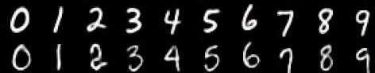
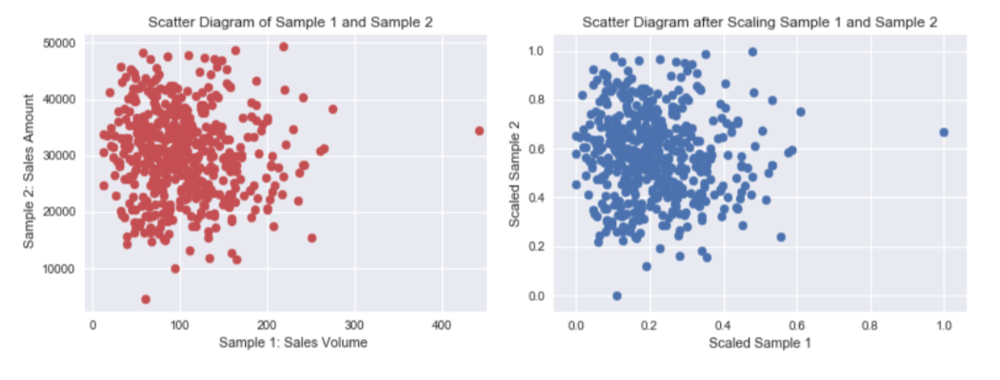

<?xml version="1.0" encoding="utf-8"?>
<!DOCTYPE html PUBLIC "-//W3C//DTD XHTML 1.0 Strict//EN"
"http://www.w3.org/TR/xhtml1/DTD/xhtml1-strict.dtd">
<html xmlns="http://www.w3.org/1999/xhtml" lang="en" xml:lang="en">
<head>
<!-- 2022-07-06 Wed 16:50 -->
<meta http-equiv="Content-Type" content="text/html;charset=utf-8" />
<meta name="viewport" content="width=device-width, initial-scale=1" />
<title>Say Hi to CNN</title>
<meta name="author" content="Yung-Chin Yen" />
<meta name="generator" content="Org Mode" />
<style>
  #content { max-width: 60em; margin: auto; }
  .title  { text-align: center;
             margin-bottom: .2em; }
  .subtitle { text-align: center;
              font-size: medium;
              font-weight: bold;
              margin-top:0; }
  .todo   { font-family: monospace; color: red; }
  .done   { font-family: monospace; color: green; }
  .priority { font-family: monospace; color: orange; }
  .tag    { background-color: #eee; font-family: monospace;
            padding: 2px; font-size: 80%; font-weight: normal; }
  .timestamp { color: #bebebe; }
  .timestamp-kwd { color: #5f9ea0; }
  .org-right  { margin-left: auto; margin-right: 0px;  text-align: right; }
  .org-left   { margin-left: 0px;  margin-right: auto; text-align: left; }
  .org-center { margin-left: auto; margin-right: auto; text-align: center; }
  .underline { text-decoration: underline; }
  #postamble p, #preamble p { font-size: 90%; margin: .2em; }
  p.verse { margin-left: 3%; }
  pre {
    border: 1px solid #e6e6e6;
    border-radius: 3px;
    background-color: #f2f2f2;
    padding: 8pt;
    font-family: monospace;
    overflow: auto;
    margin: 1.2em;
  }
  pre.src {
    position: relative;
    overflow: auto;
  }
  pre.src:before {
    display: none;
    position: absolute;
    top: -8px;
    right: 12px;
    padding: 3px;
    color: #555;
    background-color: #f2f2f299;
  }
  pre.src:hover:before { display: inline; margin-top: 14px;}
  /* Languages per Org manual */
  pre.src-asymptote:before { content: 'Asymptote'; }
  pre.src-awk:before { content: 'Awk'; }
  pre.src-authinfo::before { content: 'Authinfo'; }
  pre.src-C:before { content: 'C'; }
  /* pre.src-C++ doesn't work in CSS */
  pre.src-clojure:before { content: 'Clojure'; }
  pre.src-css:before { content: 'CSS'; }
  pre.src-D:before { content: 'D'; }
  pre.src-ditaa:before { content: 'ditaa'; }
  pre.src-dot:before { content: 'Graphviz'; }
  pre.src-calc:before { content: 'Emacs Calc'; }
  pre.src-emacs-lisp:before { content: 'Emacs Lisp'; }
  pre.src-fortran:before { content: 'Fortran'; }
  pre.src-gnuplot:before { content: 'gnuplot'; }
  pre.src-haskell:before { content: 'Haskell'; }
  pre.src-hledger:before { content: 'hledger'; }
  pre.src-java:before { content: 'Java'; }
  pre.src-js:before { content: 'Javascript'; }
  pre.src-latex:before { content: 'LaTeX'; }
  pre.src-ledger:before { content: 'Ledger'; }
  pre.src-lisp:before { content: 'Lisp'; }
  pre.src-lilypond:before { content: 'Lilypond'; }
  pre.src-lua:before { content: 'Lua'; }
  pre.src-matlab:before { content: 'MATLAB'; }
  pre.src-mscgen:before { content: 'Mscgen'; }
  pre.src-ocaml:before { content: 'Objective Caml'; }
  pre.src-octave:before { content: 'Octave'; }
  pre.src-org:before { content: 'Org mode'; }
  pre.src-oz:before { content: 'OZ'; }
  pre.src-plantuml:before { content: 'Plantuml'; }
  pre.src-processing:before { content: 'Processing.js'; }
  pre.src-python:before { content: 'Python'; }
  pre.src-R:before { content: 'R'; }
  pre.src-ruby:before { content: 'Ruby'; }
  pre.src-sass:before { content: 'Sass'; }
  pre.src-scheme:before { content: 'Scheme'; }
  pre.src-screen:before { content: 'Gnu Screen'; }
  pre.src-sed:before { content: 'Sed'; }
  pre.src-sh:before { content: 'shell'; }
  pre.src-sql:before { content: 'SQL'; }
  pre.src-sqlite:before { content: 'SQLite'; }
  /* additional languages in org.el's org-babel-load-languages alist */
  pre.src-forth:before { content: 'Forth'; }
  pre.src-io:before { content: 'IO'; }
  pre.src-J:before { content: 'J'; }
  pre.src-makefile:before { content: 'Makefile'; }
  pre.src-maxima:before { content: 'Maxima'; }
  pre.src-perl:before { content: 'Perl'; }
  pre.src-picolisp:before { content: 'Pico Lisp'; }
  pre.src-scala:before { content: 'Scala'; }
  pre.src-shell:before { content: 'Shell Script'; }
  pre.src-ebnf2ps:before { content: 'ebfn2ps'; }
  /* additional language identifiers per "defun org-babel-execute"
       in ob-*.el */
  pre.src-cpp:before  { content: 'C++'; }
  pre.src-abc:before  { content: 'ABC'; }
  pre.src-coq:before  { content: 'Coq'; }
  pre.src-groovy:before  { content: 'Groovy'; }
  /* additional language identifiers from org-babel-shell-names in
     ob-shell.el: ob-shell is the only babel language using a lambda to put
     the execution function name together. */
  pre.src-bash:before  { content: 'bash'; }
  pre.src-csh:before  { content: 'csh'; }
  pre.src-ash:before  { content: 'ash'; }
  pre.src-dash:before  { content: 'dash'; }
  pre.src-ksh:before  { content: 'ksh'; }
  pre.src-mksh:before  { content: 'mksh'; }
  pre.src-posh:before  { content: 'posh'; }
  /* Additional Emacs modes also supported by the LaTeX listings package */
  pre.src-ada:before { content: 'Ada'; }
  pre.src-asm:before { content: 'Assembler'; }
  pre.src-caml:before { content: 'Caml'; }
  pre.src-delphi:before { content: 'Delphi'; }
  pre.src-html:before { content: 'HTML'; }
  pre.src-idl:before { content: 'IDL'; }
  pre.src-mercury:before { content: 'Mercury'; }
  pre.src-metapost:before { content: 'MetaPost'; }
  pre.src-modula-2:before { content: 'Modula-2'; }
  pre.src-pascal:before { content: 'Pascal'; }
  pre.src-ps:before { content: 'PostScript'; }
  pre.src-prolog:before { content: 'Prolog'; }
  pre.src-simula:before { content: 'Simula'; }
  pre.src-tcl:before { content: 'tcl'; }
  pre.src-tex:before { content: 'TeX'; }
  pre.src-plain-tex:before { content: 'Plain TeX'; }
  pre.src-verilog:before { content: 'Verilog'; }
  pre.src-vhdl:before { content: 'VHDL'; }
  pre.src-xml:before { content: 'XML'; }
  pre.src-nxml:before { content: 'XML'; }
  /* add a generic configuration mode; LaTeX export needs an additional
     (add-to-list 'org-latex-listings-langs '(conf " ")) in .emacs */
  pre.src-conf:before { content: 'Configuration File'; }

  table { border-collapse:collapse; }
  caption.t-above { caption-side: top; }
  caption.t-bottom { caption-side: bottom; }
  td, th { vertical-align:top;  }
  th.org-right  { text-align: center;  }
  th.org-left   { text-align: center;   }
  th.org-center { text-align: center; }
  td.org-right  { text-align: right;  }
  td.org-left   { text-align: left;   }
  td.org-center { text-align: center; }
  dt { font-weight: bold; }
  .footpara { display: inline; }
  .footdef  { margin-bottom: 1em; }
  .figure { padding: 1em; }
  .figure p { text-align: center; }
  .equation-container {
    display: table;
    text-align: center;
    width: 100%;
  }
  .equation {
    vertical-align: middle;
  }
  .equation-label {
    display: table-cell;
    text-align: right;
    vertical-align: middle;
  }
  .inlinetask {
    padding: 10px;
    border: 2px solid gray;
    margin: 10px;
    background: #ffffcc;
  }
  #org-div-home-and-up
   { text-align: right; font-size: 70%; white-space: nowrap; }
  textarea { overflow-x: auto; }
  .linenr { font-size: smaller }
  .code-highlighted { background-color: #ffff00; }
  .org-info-js_info-navigation { border-style: none; }
  #org-info-js_console-label
    { font-size: 10px; font-weight: bold; white-space: nowrap; }
  .org-info-js_search-highlight
    { background-color: #ffff00; color: #000000; font-weight: bold; }
  .org-svg { }
</style>
<link rel="stylesheet" type="text/css" href="../css/white.css" />
<script type="text/x-mathjax-config">
    MathJax.Hub.Config({
        displayAlign: "center",
        displayIndent: "0em",

        "HTML-CSS": { scale: 100,
                        linebreaks: { automatic: "false" },
                        webFont: "TeX"
                       },
        SVG: {scale: 100,
              linebreaks: { automatic: "false" },
              font: "TeX"},
        NativeMML: {scale: 100},
        TeX: { equationNumbers: {autoNumber: "AMS"},
               MultLineWidth: "85%",
               TagSide: "right",
               TagIndent: ".8em"
             }
});
</script>
<script src="https://cdnjs.cloudflare.com/ajax/libs/mathjax/2.7.0/MathJax.js?config=TeX-AMS_HTML"></script>
</head>
<body>
<div id="content" class="content">
<h1 class="title">Say Hi to CNN</h1>
<div id="table-of-contents" role="doc-toc">
<h2>Table of Contents</h2>
<div id="text-table-of-contents" role="doc-toc">
<ul>
<li><a href="#org3b98742">1. 神經網路解題步驟</a></li>
<li><a href="#orgea310ad">2. 收集資料</a>
<ul>
<li><a href="#org170f327">2.1. 資料類型</a></li>
<li><a href="#orgbe9683b">2.2. DEMO</a></li>
</ul>
</li>
<li><a href="#org8efaa9b">3. 準備數據 (Preparing that data)</a>
<ul>
<li><a href="#orgaa6480f">3.1. 特徵(feature)</a></li>
<li><a href="#org42d179d">3.2. 資料正規化</a></li>
<li><a href="#org7caa02d">3.3. 常態化</a></li>
<li><a href="#org96ad8a6">3.4. 標準化</a></li>
<li><a href="#orgc66b0ab">3.5. DEMO</a></li>
</ul>
</li>
<li><a href="#orgbca5f18">4. 選擇模型 (Choosing a model)</a>
<ul>
<li><a href="#org8f28493">4.1. 語法</a></li>
<li><a href="#org80645a7">4.2. DEMO</a></li>
</ul>
</li>
<li><a href="#org7e0f5ed">5. 訓練機器 (Training)</a>
<ul>
<li><a href="#org699ca68">5.1. 語法</a></li>
<li><a href="#org2817be0">5.2. DEMO</a></li>
</ul>
</li>
<li><a href="#org759d9f2">6. 評估分析 (Evaluation)</a></li>
<li><a href="#org86db841">7. 調整參數 (Hyperparameter tuning)</a>
<ul>
<li><a href="#org2f08a20">7.1. model參數</a></li>
<li><a href="#org9830f7c">7.2. Hyperparameters</a></li>
</ul>
</li>
<li><a href="#orge51ecbc">8. 預測推論 (Prediction)</a></li>
<li><a href="#org3db3a30">9. DEMO 1: Regression</a>
<ul>
<li><a href="#org70cb5b6">9.1. 產生數據</a></li>
<li><a href="#orgb732033">9.2. 以scikit learn的線性迴歸模組來解決</a></li>
<li><a href="#org83e2308">9.3. 建立model來畫迴歸線</a></li>
<li><a href="#orga0fdcf7">9.4. 訓練model</a></li>
<li><a href="#org5b9abb1">9.5. 查看訓練過程</a></li>
<li><a href="#orgec2b134">9.6. 評估model</a></li>
<li><a href="#org8df6511">9.7. 預測結果</a></li>
<li><a href="#org3014ce9">9.8. 調整model/參數</a></li>
</ul>
</li>
<li><a href="#org20651d3">10. 課堂練習: Regression</a>
<ul>
<li><a href="#org513e621">10.1. 數據</a></li>
</ul>
</li>
<li><a href="#Hi-MNIST">11. DEMO 2: MNIST 資料集</a>
<ul>
<li><a href="#orgda8ebb8">11.1. MNIST</a></li>
<li><a href="#orgd9ad364">11.2. 準備 MNIST 資料</a></li>
<li><a href="#orgf82938f">11.3. MNIST 的推論處理</a></li>
<li><a href="#org0f401cd">11.4. MNIST 資料集:以 DNN Sequential 模型為例</a></li>
</ul>
</li>
<li><a href="#HomeWork-2">12. 個人作業二</a>
<ul>
<li><a href="#org6dc76d3">12.1. 背景</a></li>
<li><a href="#org2f92fd9">12.2. 作業要求</a></li>
</ul>
</li>
<li><a href="#orgd52ab7a">13. 小組作業三</a>
<ul>
<li><a href="#orgf51e98f">13.1. Resources</a></li>
</ul>
</li>
</ul>
</div>
</div>

<div id="outline-container-org3b98742" class="outline-2">
<h2 id="org3b98742"><span class="section-number-2">1.</span> 神經網路解題步驟</h2>
<div class="outline-text-2" id="text-1">
<p>
使用神經網路解決問題可大致分為兩個步驟：「學習」與「推論」。<br />
</p>
<ul class="org-ul">
<li>學習指使用訓練資料進行權重參數的學習<br /></li>
<li>推論指使用學習過的參數進行資料分類CNN<br /></li>
</ul>
<p>
而實際的動手實作可再細分為以下幾個步驟<br />
</p>
<ol class="org-ol">
<li>收集資料 (Gathering data)<br /></li>
<li>準備數據 (Preparing that data)<br /></li>
<li>選擇模型 (Choosing a model)<br /></li>
<li>訓練機器 (Training)<br /></li>
<li>評估分析 (Evaluation)<br /></li>
<li>調整參數 (Hyperparameter tuning)<br /></li>
<li>預測推論 (Prediction)<br /></li>
</ol>
<p>
實際動手玩一下神經網路架構: <a href="https://playground.tensorflow.org">Tensorflow Playground</a><br />
</p>
</div>
</div>

<div id="outline-container-orgea310ad" class="outline-2">
<h2 id="orgea310ad"><span class="section-number-2">2.</span> 收集資料</h2>
<div class="outline-text-2" id="text-2">
</div>
<div id="outline-container-org170f327" class="outline-3">
<h3 id="org170f327"><span class="section-number-3">2.1.</span> 資料類型</h3>
<div class="outline-text-3" id="text-2-1">
</div>
<ol class="org-ol">
<li><a id="org1dabf0a"></a>人工收集<br />
<div class="outline-text-4" id="text-2-1-1">
<ul class="org-ul">
<li>預測股市股價: 開盤、收盤、成交量、技術指標、財務指標、籌碼指標等等<br /></li>
<li>以物品識別:大量物品照片並給予名稱(label)<br /></li>
<li>以注音符號手寫辨識: 大量手寫照片及其對應答案(label)<br /></li>
</ul>
</div>
</li>
<li><a id="org17d404c"></a>現成資料集<br />
<ol class="org-ol">
<li><a id="org860f021"></a>MNIST<br />
<div class="outline-text-5" id="text-2-1-2-1">
<p>
資料集由 0~9 的數字影像構成(如圖<a href="#orgb449d61">1</a>)，共計 60000 張訓練影像、10000 張測試影像。<br />
</p>

<div id="orgb449d61" class="figure">
<p><br />
</p>
<p><span class="figure-number">Figure 1: </span>MNIST 資料集內容範例</p>
</div>
</div>
</li>
<li><a id="org62e7b23"></a>Boston housing<br />
<div class="outline-text-5" id="text-2-1-2-2">
<p>
Boston Housing數據集包含有關波士頓不同房屋的數據(數據，如年份、面積)，本資料集中有506個樣本和13個特徵變量，目標是使用給定的特徵預測房屋價格的價值。<br />
</p>
</div>
</li>

<li><a id="orgac861a2"></a>Iris<br />
<div class="outline-text-5" id="text-2-1-2-3">
<p>
鳶尾花資料集是非常著名的生物資訊資料集之一，由英國統計學家 Ronald Fisher 在1936年時，對加斯帕半島上的鳶尾屬花朵所提取的花瓣花萼的長寬數據資料，依照山鳶尾，變色鳶尾，維吉尼亞鳶尾三類進行標示，共150筆資料<sup><a id="fnr.1" class="footref" href="#fn.1" role="doc-backlink">1</a></sup>。每筆資料有五個欄位：花萼長度(Sepal Length)、花萼寬度(Sepal Width)、花瓣長度(Petal Length) 、花瓣寬度(Petal Width)、類別(Class)，其中類有Setosa，Versicolor和Virginica三個品種。<br />
</p>

<div id="org12e0efd" class="figure">
<p><br />
</p>
<p><span class="figure-number">Figure 2: </span>Iris資料集</p>
</div>
</div>
</li>
<li><a id="orgbe472fc"></a>Cifar-10<br />
<div class="outline-text-5" id="text-2-1-2-4">
<p>
由深度學習大師 Geoffrey Hinton 教授與其在加拿大多倫多大學的學生 Alex Krixhevsky 與 Vinoid Nair 所整理之影像資料集, 包含 6 萬筆 32*32 低解析度之彩色圖片, 其中 5 萬筆為訓練集; 1 萬筆為測試集, 是機器學習中常用的圖片辨識資料集<br />
</p>

<div id="org1991273" class="figure">
<p><br />
</p>
<p><span class="figure-number">Figure 3: </span>Cifar-10</p>
</div>
</div>
</li>
</ol>
</li>
</ol>
</div>

<div id="outline-container-orgbe9683b" class="outline-3">
<h3 id="orgbe9683b"><span class="section-number-3">2.2.</span> DEMO</h3>
<div class="outline-text-3" id="text-2-2">
<p>
mnist.load_data(): 自網路下載資料集(內容會包含 <b>資料(x)</b> 和 <b>標籤(y)</b> 兩部份)，load_data()這個function會把整份資料集分割成兩個子集合：訓練集(training set)和測試集(testing set)。<br />
</p>
<div class="org-src-container">
<pre class="src src-python"><span style="color: #51afef;">from</span> keras.datasets <span style="color: #51afef;">import</span> mnist
(x_Train, y_Train), (<span style="color: #dcaeea;">x_Test</span>, <span style="color: #dcaeea;">y_Test</span>) = mnist.load_data()
</pre>
</div>
</div>
</div>
</div>

<div id="outline-container-org8efaa9b" class="outline-2">
<h2 id="org8efaa9b"><span class="section-number-2">3.</span> 準備數據 (Preparing that data)</h2>
<div class="outline-text-2" id="text-3">
<p>
當我們在比較分析兩組數據資料時，可能會遭遇因單位的不同(例如：身高與體重)，或數字大小的代表性不同(例如：粉專1萬人與滿足感0.8)，造成各自變化的程度不一，進而影響統計分析的結果<sup><a id="fnr.2" class="footref" href="#fn.2" role="doc-backlink">2</a></sup>。會造成什麼影響&#x2013;那些變化量最大的因素（特徵）會主導分析結果。<br />
</p>
</div>
<div id="outline-container-orgaa6480f" class="outline-3">
<h3 id="orgaa6480f"><span class="section-number-3">3.1.</span> 特徵(feature)</h3>
<div class="outline-text-3" id="text-3-1">
<p>
什麼是特徵?每一筆資料由不同類型的資料(數值、字串、布林值&#x2026;)組成，以Iris資料集為例，每朵花有四種數值，這些都是它的特徵(feature)，我們的目的就是藉由分析這些特徵來預測花的種類。<br />
</p>

<p>
下列程式利用scikit learn下載線上的資料集，先以pandas轉換Iris的四種特徵值為：<br />
</p>
<div class="org-src-container">
<pre class="src src-python"><span class="linenr">1: </span><span style="color: #51afef;">from</span> sklearn <span style="color: #51afef;">import</span> datasets
<span class="linenr">2: </span><span style="color: #dcaeea;">iris</span> = datasets.load_iris()
<span class="linenr">3: </span><span style="color: #c678dd;">print</span>(iris.data[:<span style="color: #da8548; font-weight: bold;">5</span>])
<span class="linenr">4: </span><span style="color: #c678dd;">print</span>(iris.feature_names)
</pre>
</div>

<pre class="example">
[[5.1 3.5 1.4 0.2]
 [4.9 3.  1.4 0.2]
 [4.7 3.2 1.3 0.2]
 [4.6 3.1 1.5 0.2]
 [5.  3.6 1.4 0.2]]
['sepal length (cm)', 'sepal width (cm)', 'petal length (cm)', 'petal width (cm)']
</pre>


<div class="org-src-container">
<pre class="src src-python"><span class="linenr">1: </span><span style="color: #51afef;">from</span> sklearn <span style="color: #51afef;">import</span> datasets
<span class="linenr">2: </span><span style="color: #51afef;">import</span> pandas <span style="color: #51afef;">as</span> pd
<span class="linenr">3: </span><span style="color: #dcaeea;">iris</span> = datasets.load_iris()
<span class="linenr">4: </span><span style="color: #c678dd;">print</span>(<span style="color: #c678dd;">type</span>(iris))
<span class="linenr">5: </span>
<span class="linenr">6: </span><span style="color: #dcaeea;">df</span> = pd.DataFrame(data=iris.data, columns=iris.feature_names)
<span class="linenr">7: </span><span style="color: #c678dd;">print</span>(df.head())
<span class="linenr">8: </span><span style="color: #c678dd;">print</span>(df.columns)
</pre>
</div>

<pre class="example" id="org260e5e5">
&lt;class 'sklearn.utils.Bunch'&gt;
   sepal length (cm)  sepal width (cm)  petal length (cm)  petal width (cm)
0                5.1               3.5                1.4               0.2
1                4.9               3.0                1.4               0.2
2                4.7               3.2                1.3               0.2
3                4.6               3.1                1.5               0.2
4                5.0               3.6                1.4               0.2
Index(['sepal length (cm)', 'sepal width (cm)', 'petal length (cm)',
       'petal width (cm)'],
      dtype='object')
</pre>
<p>
上述程式將scikit learn所下載的資料集先以pandas轉換Iris的四種特徵值為：<br />
</p>
<ul class="org-ul">
<li>sepal length (cm)<br /></li>
<li>sepal width (cm)<br /></li>
<li>petal length (cm)<br /></li>
<li>petal width (cm)<br /></li>
</ul>
</div>
</div>
<div id="outline-container-org42d179d" class="outline-3">
<h3 id="org42d179d"><span class="section-number-3">3.2.</span> 資料正規化</h3>
<div class="outline-text-3" id="text-3-2">
<p>
資料的正規化(Normalization)是將原始資料的數據按比例縮放於 [0, 1] 區間中，且不改變其原本分佈。<br />
</p>

<div id="org545306c" class="figure">
<p><br />
</p>
<p><span class="figure-number">Figure 4: </span>資料正規化</p>
</div>

<p>
正規化有兩種常用的方法，可以將不同規模的特徵轉化為相同的規模：常態化(normalization)和標準化(standardization)：<br />
</p>
</div>
</div>
<div id="outline-container-org7caa02d" class="outline-3">
<h3 id="org7caa02d"><span class="section-number-3">3.3.</span> 常態化</h3>
<div class="outline-text-3" id="text-3-3">
<p>
將特徵值縮化為 0~1 間，這是「最小最大縮放」(min-max scaling)的一個特例，某一特徵值的常態化做法如下：<br />
\[x_{norm}^i = \frac{x^i-x_{min}}{x_{max}-x_{min}}\]<br />
若以 scikit-learn 套件來完成實作，其程式碼如下：<br />
</p>
<div class="org-src-container">
<pre class="src src-shell">from sklearn.preprocessing import MinMaxScaler
<span style="color: #dcaeea;">mms</span> = MinMaxScaler()
<span style="color: #dcaeea;">X_train_norm</span> = mms.fit_transform(X_train)
<span style="color: #dcaeea;">X_test_norm</span> = mms.fit_transform(X_test)
</pre>
</div>
</div>
</div>

<div id="outline-container-org96ad8a6" class="outline-3">
<h3 id="org96ad8a6"><span class="section-number-3">3.4.</span> 標準化</h3>
<div class="outline-text-3" id="text-3-4">
<p>
雖說常態化簡單實用，但對許多機器學習演算法來說(特別是梯度下降法的最佳化)，標準化則更為實際，我們可令標準化後的特徵值其平均數為 0、標準差為 1，這樣一來，特徵值會滿足常態分佈，進而使演算法對於離群值不那麼敏感。標準化的公式如下：<br />
\[x_{std}^i = \frac{x^i-\mu_x}{\sigma_x}\]<br />
若以 scikit-learn 套件來完成實作，其程式碼如下：<br />
</p>
<div class="org-src-container">
<pre class="src src-python"><span style="color: #51afef;">from</span> sklearn.preprocessing <span style="color: #51afef;">import</span> StandardScaler
<span style="color: #dcaeea;">stdsc</span> = StandardScaler()
<span style="color: #dcaeea;">X_train_std</span> = stdsc.fit_transform(X_train)
<span style="color: #dcaeea;">X_test_std</span> = stdsc.transform(X_test)
</pre>
</div>
</div>
</div>

<div id="outline-container-orgc66b0ab" class="outline-3">
<h3 id="orgc66b0ab"><span class="section-number-3">3.5.</span> DEMO</h3>
<div class="outline-text-3" id="text-3-5">
<div class="org-src-container">
<pre class="src src-python"><span style="color: #dcaeea;">x_train</span> = x_train.reshape(<span style="color: #da8548; font-weight: bold;">60000</span>, <span style="color: #da8548; font-weight: bold;">784</span>)
<span style="color: #dcaeea;">x_test</span> = x_test.reshape(<span style="color: #da8548; font-weight: bold;">10000</span>, <span style="color: #da8548; font-weight: bold;">784</span>)
<span style="color: #dcaeea;">x_train</span> = x_train.astype(<span style="color: #98be65;">'float32'</span>)
<span style="color: #dcaeea;">x_test</span> = x_test.astype(<span style="color: #98be65;">'float32'</span>)
<span style="color: #dcaeea;">x_train</span> /= <span style="color: #da8548; font-weight: bold;">255</span>
<span style="color: #dcaeea;">x_test</span> /= <span style="color: #da8548; font-weight: bold;">255</span>


<span style="color: #dcaeea;">y_TrainOneHot</span> = np_utils.to_categorical(y_Train)
<span style="color: #dcaeea;">y_TestOneHot</span> = np_utils.to_categorical(y_Test)
</pre>
</div>
</div>
</div>
</div>

<div id="outline-container-orgbca5f18" class="outline-2">
<h2 id="orgbca5f18"><span class="section-number-2">4.</span> 選擇模型 (Choosing a model)</h2>
<div class="outline-text-2" id="text-4">
<p>
當數據都進行整理後，接下來就是要選擇訓練用的模型，像是決策樹、LSTM、RNN等等都是機器學習中常使用的訓練模型，其中目前較常拿來訓練股市的是「LSTM」，中文叫做長短期記憶，是屬於深度學習中的一個模型。另一種CNN模型則適合處理圖形資料。<br />
</p>
</div>

<div id="outline-container-org8f28493" class="outline-3">
<h3 id="org8f28493"><span class="section-number-3">4.1.</span> 語法</h3>
<div class="outline-text-3" id="text-4-1">
<p>
<a href="https://keras.io/api/models/model_training_apis/">Keras API reference / Models API / Model training APIs </a><br />
</p>
</div>
</div>

<div id="outline-container-org80645a7" class="outline-3">
<h3 id="org80645a7"><span class="section-number-3">4.2.</span> DEMO</h3>
<div class="outline-text-3" id="text-4-2">
</div>
<ol class="org-ol">
<li><a id="org820e886"></a>LSTM模型示例<br />
<div class="outline-text-4" id="text-4-2-1">
<div class="org-src-container">
<pre class="src src-python"><span style="color: #dcaeea;">model</span> = Sequential()
model.add(LSTM(<span style="color: #da8548; font-weight: bold;">128</span>,
               input_shape=(x_train.shape[<span style="color: #da8548; font-weight: bold;">1</span>:]),
               activation=<span style="color: #98be65;">'relu'</span>,
               return_sequences=<span style="color: #a9a1e1;">True</span>))
model.add(Dropout(<span style="color: #da8548; font-weight: bold;">0.2</span>))
model.add(LSTM(<span style="color: #da8548; font-weight: bold;">128</span>, activation=<span style="color: #98be65;">'relu'</span>))
model.add(Dropout(<span style="color: #da8548; font-weight: bold;">0.1</span>))
model.add(Dense(<span style="color: #da8548; font-weight: bold;">32</span>, activation=<span style="color: #98be65;">'relu'</span>))
model.add(Dropout(<span style="color: #da8548; font-weight: bold;">0.2</span>))
model.add(Dense(<span style="color: #da8548; font-weight: bold;">10</span>, activation=<span style="color: #98be65;">'softmax'</span>))


</pre>
</div>
</div>
</li>
<li><a id="org66e8dd2"></a>CNN模型示例<br />
<div class="outline-text-4" id="text-4-2-2">
<div class="org-src-container">
<pre class="src src-python"><span style="color: #dcaeea;">model</span> = Sequential()
model.add(Dense(units=<span style="color: #da8548; font-weight: bold;">128</span>,
                input_dim=<span style="color: #da8548; font-weight: bold;">784</span>,
                kernel_initializer=<span style="color: #98be65;">'normal'</span>,
                activation=<span style="color: #98be65;">'relu'</span>))
model.add(Dense(<span style="color: #da8548; font-weight: bold;">64</span>, activation=<span style="color: #98be65;">'relu'</span>)
model.add(Dense(units=<span style="color: #da8548; font-weight: bold;">10</span>,
                kernel_initializer=<span style="color: #98be65;">'normal'</span>,
                activation=<span style="color: #98be65;">'softmax'</span>))


</pre>
</div>

<div id="org040af16" class="figure">
<p><br />
</p>
<p><span class="figure-number">Figure 5: </span>MNIST-NeuralNet</p>
</div>
</div>
</li>
</ol>
</div>
</div>

<div id="outline-container-org7e0f5ed" class="outline-2">
<h2 id="org7e0f5ed"><span class="section-number-2">5.</span> 訓練機器 (Training)</h2>
<div class="outline-text-2" id="text-5">
<p>
選擇好訓練模型後，再來要將訓練集資料丟進去模型中做訓練，每層要放多少神經元、要跑幾層等等都會影響模型訓練出來的結果，這部分只能靠經驗跟不斷嘗試去學習，或是上網多爬文看別人怎麼撰寫訓練模型。<br />
</p>

<p>
在真正訓練前應該再設定好模型的loss function, optimizer。<br />
</p>
</div>
<div id="outline-container-org699ca68" class="outline-3">
<h3 id="org699ca68"><span class="section-number-3">5.1.</span> 語法</h3>
<div class="outline-text-3" id="text-5-1">
<p>
<a href="https://keras.io/api/models/model_training_apis/">Keras API reference / Models API / Model training APIs </a><br />
</p>
</div>
</div>
<div id="outline-container-org2817be0" class="outline-3">
<h3 id="org2817be0"><span class="section-number-3">5.2.</span> DEMO</h3>
<div class="outline-text-3" id="text-5-2">
</div>
<ol class="org-ol">
<li><a id="orgebf7a22"></a>LSTM<br />
<div class="outline-text-4" id="text-5-2-1">
<div class="org-src-container">
<pre class="src src-python"><span style="color: #5B6268;"># </span><span style="color: #5B6268;">ptimizer, loss function</span>
model.<span style="color: #c678dd;">compile</span>(optimizer=Adam(lr=<span style="color: #da8548; font-weight: bold;">0.001</span>),
              loss=<span style="color: #98be65;">'categorical_crossentropy'</span>,
              metrics=[<span style="color: #98be65;">'accuracy'</span>])

model.fit(x_train, y_train,
          e pochs=<span style="color: #da8548; font-weight: bold;">3</span>,
          validation_data=(x_test, y_test))
</pre>
</div>
</div>
</li>
<li><a id="org92a504d"></a>CNN<br />
<div class="outline-text-4" id="text-5-2-2">
<div class="org-src-container">
<pre class="src src-python"><span style="color: #5B6268;"># </span><span style="color: #5B6268;">optimizer, loss function</span>
model.<span style="color: #c678dd;">compile</span>(loss=<span style="color: #98be65;">'categorical_crossentropy'</span>,
              optimizer=<span style="color: #98be65;">'adam'</span>, metrics=[<span style="color: #98be65;">'accuracy'</span>])

model.fit(x=x_Train,
          y=y_TrainOneHot,
          validation_split=<span style="color: #da8548; font-weight: bold;">0.2</span>,
          epochs=<span style="color: #da8548; font-weight: bold;">5</span>, batch_size=<span style="color: #da8548; font-weight: bold;">30</span>, verbose=<span style="color: #da8548; font-weight: bold;">2</span>)
</pre>
</div>
</div>
</li>
</ol>
</div>
</div>

<div id="outline-container-org759d9f2" class="outline-2">
<h2 id="org759d9f2"><span class="section-number-2">6.</span> 評估分析 (Evaluation)</h2>
<div class="outline-text-2" id="text-6">
<p>
當模型訓練完成後，接下來就是判斷該模型是否有過度擬合(overfitting)，這裡就是帶入測試集的資料進行評估，也可以嘗試利用交叉驗證的方式進行模型的擬合性判斷，以及利用RESM、MSE等統計計算來判斷模型的準確度<br />
</p>
<div class="org-src-container">
<pre class="src src-python"><span style="color: #dcaeea;">scores</span> = model.evaluate(x_Train, y_TestOneHot)
</pre>
</div>
</div>
</div>

<div id="outline-container-org86db841" class="outline-2">
<h2 id="org86db841"><span class="section-number-2">7.</span> 調整參數 (Hyperparameter tuning)</h2>
<div class="outline-text-2" id="text-7">
<p>
到這大致上模型已經完成了50%，最後的一步就是進行參數的微調，我們也稱為「超參數 (Hyperparamters)」，讓整個模型更加的精準，但也不能過度的調整，因為會造成overfitting的結果，這個取捨就只能依照無窮盡的反覆迭帶去尋找了，這部分也是相對較耗時間的地方<br />
</p>
</div>
<div id="outline-container-org2f08a20" class="outline-3">
<h3 id="org2f08a20"><span class="section-number-3">7.1.</span> model參數</h3>
<div class="outline-text-3" id="text-7-1">
<ul class="org-ul">
<li>調整model架構: <a href="https://medium.com/%E9%9B%9E%E9%9B%9E%E8%88%87%E5%85%94%E5%85%94%E7%9A%84%E5%B7%A5%E7%A8%8B%E4%B8%96%E7%95%8C/%E6%A9%9F%E5%99%A8%E5%AD%B8%E7%BF%92-ml-note-cnn%E6%BC%94%E5%8C%96%E5%8F%B2-alexnet-vgg-inception-resnet-keras-coding-668f74879306">[機器學習 ML NOTE] CNN演化史(AlexNet、VGG、Inception、ResNet)+Keras Coding</a><br /></li>
<li>loss function: <a href="https://keras.io/api/losses/">https://keras.io/api/losses/</a><br /></li>
<li>optimizers: <a href="https://keras.io/api/optimizers/">https://keras.io/api/optimizers/</a><br /></li>
</ul>
</div>
</div>
<div id="outline-container-org9830f7c" class="outline-3">
<h3 id="org9830f7c"><span class="section-number-3">7.2.</span> Hyperparameters</h3>
<div class="outline-text-3" id="text-7-2">
<ul class="org-ul">
<li>batch size：一次迭代放入進行訓練或測試的影像數量。<br /></li>
<li>epoch：一種單位，所有影像皆被計算過1次後即為1 epoch<br /></li>
<li><a href="http://elmer-storage.blogspot.com/2018/06/cnn-hyperparamters.html">CNN筆記 - 超參數 (Hyperparamters) </a><br /></li>
</ul>
</div>
</div>
</div>

<div id="outline-container-orge51ecbc" class="outline-2">
<h2 id="orge51ecbc"><span class="section-number-2">8.</span> 預測推論 (Prediction)</h2>
<div class="outline-text-2" id="text-8">
<p>
到此，模型已經正式完成。那，怎麼知道這個模型夠不夠優秀？能不能正常運作？最簡單的評估方式是以一筆新的資料來測試。<br />
</p>
<div class="org-src-container">
<pre class="src src-python"><span style="color: #dcaeea;">prediction</span> = model.predict_classes(x_Test4D_normalize)
<span style="color: #c678dd;">print</span>(prediction[:<span style="color: #da8548; font-weight: bold;">10</span>])
</pre>
</div>
<p>
以MNIST手寫數字辨識為例，我們可以自已寫一個數字餵給模型，看看模型是否能正確預測。<br />
</p>

<p>
對於模型來說，這類全新的數據則是一個未知數，如果我們在訓練與測試階段都用同一批資料，這就好像上課與考試的內容都一樣，這會導致學生其實沒有學到真正的知識，而考試得到的分數也不會太準確。這種訓練資料與測試資料過於雷同而導致模型對新型別的資料欠缺處理能力的問題即為 <b>過度擬合(overfitting)</b> ；反之，如果我們的模型對於各種新型態資料都能辨識，則這個模型就具有 <b>泛化（Generalization）</b> 的預測能力。<br />
</p>
</div>
</div>

<div id="outline-container-org3db3a30" class="outline-2">
<h2 id="org3db3a30"><span class="section-number-2">9.</span> DEMO 1: Regression</h2>
<div class="outline-text-2" id="text-9">
<p>
CNN雖然更多場合是用於處理影像相關的處理工作，然而他也可以用來幫我們解決一些數學問題，例如畫迴歸線。開啟colab、新增一個筆記本，逐一將下列程式碼複製、貼到colab執行，觀察結果。<br />
</p>
</div>
<div id="outline-container-org70cb5b6" class="outline-3">
<h3 id="org70cb5b6"><span class="section-number-3">9.1.</span> 產生數據</h3>
<div class="outline-text-3" id="text-9-1">
<div class="org-src-container">
<pre class="src src-python"><span style="color: #51afef;">import</span> matplotlib.pyplot <span style="color: #51afef;">as</span> plt
<span style="color: #51afef;">import</span> numpy <span style="color: #51afef;">as</span> np

<span style="color: #dcaeea;">x</span> = np.random.uniform(<span style="color: #da8548; font-weight: bold;">0.0</span>, <span style="color: #da8548; font-weight: bold;">3</span>, (<span style="color: #da8548; font-weight: bold;">10</span>))
<span style="color: #dcaeea;">y</span> = <span style="color: #da8548; font-weight: bold;">78</span> + <span style="color: #da8548; font-weight: bold;">7.8</span>*x + np.random.normal(<span style="color: #da8548; font-weight: bold;">0.0</span>, <span style="color: #da8548; font-weight: bold;">3</span>, <span style="color: #c678dd;">len</span>(x))

plt.scatter(x, y)
</pre>
</div>

<p>
結果如下圖，一共有10個點，如何畫出一條迴歸線代表這10個點的趨勢？這個題目本身是什麼意思？<br />
</p>

<div id="org4108cc3" class="figure">
<p><br />
</p>
<p><span class="figure-number">Figure 6: </span>Caption</p>
</div>

<p>
想像一下，上面是10個學生的資料，X軸是學生對於數學的喜愛程度，Y軸是該生的數學期末考成績，看起來二者間是存在某種關係的。那，如果已知某生對數學的喜愛程為2.0，我們可以預測他的數學期末考成績嗎？&#x2014;可以的，如果我們有一條像底下的迴歸線公式：<br />
\[ MathScore_i = a * MathLove_i + b \]<br />
如此一來，我們就能輸入喜愛程度，得到對數學成績的預測結果。<br />
</p>

<p>
當樣本數不太多，而你的計算能力也不弱時，也許你可以手動將上述公式中的a與b求出，得到一條 \(y=ax+b\) 的迴歸線，但萬一樣本數有200個點呢<br />
</p>
<div class="org-src-container">
<pre class="src src-python"><span style="color: #51afef;">import</span> matplotlib.pyplot <span style="color: #51afef;">as</span> plt
<span style="color: #51afef;">import</span> numpy <span style="color: #51afef;">as</span> np

<span style="color: #dcaeea;">x</span> = np.random.uniform(<span style="color: #da8548; font-weight: bold;">0.0</span>, <span style="color: #da8548; font-weight: bold;">3</span>, (<span style="color: #da8548; font-weight: bold;">2000</span>))
<span style="color: #dcaeea;">y</span> = <span style="color: #da8548; font-weight: bold;">78</span> + <span style="color: #da8548; font-weight: bold;">7.8</span>*x + np.random.normal(<span style="color: #da8548; font-weight: bold;">0.0</span>, <span style="color: #da8548; font-weight: bold;">3</span>, <span style="color: #c678dd;">len</span>(x))
plt.cla()
plt.scatter(x, y)
plt.savefig(<span style="color: #98be65;">"images/cnn-regression-2.png"</span>, dpi=<span style="color: #da8548; font-weight: bold;">300</span>)

</pre>
</div>

<p>
這段程式碼利用numpy套件的隨機函數產生2000個點，接下來我們想建一個CNN模型來幫我們畫一條迴歸線。<br />
</p>

<div id="org9162d0e" class="figure">
<p><br />
</p>
<p><span class="figure-number">Figure 7: </span>Caption</p>
</div>
</div>
</div>
<div id="outline-container-orgb732033" class="outline-3">
<h3 id="orgb732033"><span class="section-number-3">9.2.</span> 以scikit learn的線性迴歸模組來解決</h3>
<div class="outline-text-3" id="text-9-2">
<div class="org-src-container">
<pre class="src src-python"><span style="color: #51afef;">from</span> sklearn <span style="color: #51afef;">import</span> linear_model
<span style="color: #dcaeea;">regr</span>=linear_model.LinearRegression()

<span style="color: #dcaeea;">x</span> = x.reshape(-<span style="color: #da8548; font-weight: bold;">1</span>, <span style="color: #da8548; font-weight: bold;">1</span>)
<span style="color: #5B6268;"># </span><span style="color: #5B6268;">&#25913;&#35722;x&#30340;&#26684;&#24335;&#24418;&#29376;&#65292;</span>
<span style="color: #5B6268;"># </span><span style="color: #5B6268;">&#21407;&#26412;x&#28858; [x1, x2, x3, ...]</span>
<span style="color: #5B6268;"># </span><span style="color: #5B6268;">&#35201;&#25913;&#26684;&#24335;&#31526;&#21512;scikit learn&#36852;&#27512;&#27169;&#32068;&#30340;&#38656;&#27714;&#65292;&#35722;&#25104;: [ [x1], [x2], [x3], ...]</span>
y = y.reshape(-<span style="color: #da8548; font-weight: bold;">1</span>, <span style="color: #da8548; font-weight: bold;">1</span>)
regr.fit(x, y)

<span style="color: #5B6268;">#</span><span style="color: #5B6268;">&#30701;&#30701;&#20841;&#34892;code&#65292;&#27169;&#22411;&#24050;&#32147;&#24314;&#27083;&#23436;&#25104;&#20102;! &#25509;&#19979;&#20358;&#65292;&#25105;&#20497;&#20358;&#30475;&#30475;&#35347;&#32244;&#38598;&#30340;&#25104;&#26524;&#12290;</span>
plt.clf()
plt.scatter(x,y)
plt.plot(x, regr.predict(x), color=<span style="color: #98be65;">'red'</span>, linewidth=<span style="color: #da8548; font-weight: bold;">4</span>)
<span style="color: #c678dd;">print</span>(<span style="color: #98be65;">"====&#23526;&#38555;(&#21069;&#19977;&#31558;)===="</span>)
<span style="color: #c678dd;">print</span>(y[:<span style="color: #da8548; font-weight: bold;">3</span>])
<span style="color: #c678dd;">print</span>(<span style="color: #98be65;">"====&#38928;&#28204;(&#21069;&#19977;&#31558;)===="</span>)
<span style="color: #c678dd;">print</span>(regr.predict(x[:<span style="color: #da8548; font-weight: bold;">3</span>]))
</pre>
</div>

<pre class="example">
====實際(前三筆)====
[[91.12584105]
 [94.36218262]
 [92.10536141]]
====預測(前三筆)====
[[92.70522144]
 [96.66162023]
 [89.95865672]]
</pre>


<div id="org2202877" class="figure">
<p><br />
</p>
<p><span class="figure-number">Figure 8: </span>Caption</p>
</div>
</div>
</div>

<div id="outline-container-org83e2308" class="outline-3">
<h3 id="org83e2308"><span class="section-number-3">9.3.</span> 建立model來畫迴歸線</h3>
<div class="outline-text-3" id="text-9-3">
<div class="org-src-container">
<pre class="src src-python"><span style="color: #51afef;">from</span> keras.models <span style="color: #51afef;">import</span> Sequential
<span style="color: #51afef;">from</span> keras.layers <span style="color: #51afef;">import</span> Dense
<span style="color: #51afef;">from</span> keras.layers <span style="color: #51afef;">import</span> Dropout

<span style="color: #5B6268;"># </span><span style="color: #5B6268;">A simple regression model</span>
<span style="color: #dcaeea;">model</span> = Sequential()
model.add(Dense(<span style="color: #da8548; font-weight: bold;">4</span>, input_shape=(<span style="color: #da8548; font-weight: bold;">1</span>,)))
model.add(Dropout(<span style="color: #da8548; font-weight: bold;">0.5</span>))
model.add(Dense(<span style="color: #da8548; font-weight: bold;">8</span>, input_shape=(<span style="color: #da8548; font-weight: bold;">1</span>,)))
model.add(Dropout(<span style="color: #da8548; font-weight: bold;">0.5</span>))
model.add(Dense(<span style="color: #da8548; font-weight: bold;">1</span>, input_shape=(<span style="color: #da8548; font-weight: bold;">1</span>,)))
model.<span style="color: #c678dd;">compile</span>(loss=<span style="color: #98be65;">'mse'</span>, optimizer=<span style="color: #98be65;">'rmsprop'</span>)
<span style="color: #c678dd;">print</span>(model)
</pre>
</div>

<pre class="example">
&lt;keras.engine.sequential.Sequential object at 0x7f96fca66400&gt;
</pre>
</div>
</div>

<div id="outline-container-orga0fdcf7" class="outline-3">
<h3 id="orga0fdcf7"><span class="section-number-3">9.4.</span> 訓練model</h3>
<div class="outline-text-3" id="text-9-4">
<div class="org-src-container">
<pre class="src src-python"><span style="color: #5B6268;"># </span><span style="color: #5B6268;">&#23559;&#23526;&#38555;&#36039;&#26009;&#20998;&#28858;&#35347;&#32244;&#38598;&#33287;&#28204;&#35430;&#38598;</span>
<span style="color: #dcaeea;">x_Train</span> = x[:<span style="color: #da8548; font-weight: bold;">1500</span>]
<span style="color: #dcaeea;">x_Test</span> = x[<span style="color: #da8548; font-weight: bold;">1500</span>:]
<span style="color: #dcaeea;">y_Train</span> = y[:<span style="color: #da8548; font-weight: bold;">1500</span>]
<span style="color: #dcaeea;">y_Test</span> = y[<span style="color: #da8548; font-weight: bold;">1500</span>:]

<span style="color: #5B6268;"># </span><span style="color: #5B6268;">The fit() method - trains the model</span>
<span style="color: #dcaeea;">train_history</span> = model.fit(x=x_Train, y=y_Train,
                          validation_split=<span style="color: #da8548; font-weight: bold;">0.2</span>,
                          epochs=<span style="color: #da8548; font-weight: bold;">100</span>, batch_size=<span style="color: #da8548; font-weight: bold;">200</span>,
                          verbose=<span style="color: #da8548; font-weight: bold;">2</span>)
<span style="color: #c678dd;">print</span>(train_history)
</pre>
</div>

<pre class="example" id="org49495c0">
Epoch 1/100
6/6 - 1s - loss: 8163.1743 - val_loss: 8152.0234 - 676ms/epoch - 113ms/step
Epoch 2/100
6/6 - 0s - loss: 8130.1035 - val_loss: 8134.6201 - 18ms/epoch - 3ms/step
Epoch 3/100
6/6 - 0s - loss: 8115.6943 - val_loss: 8119.0532 - 19ms/epoch - 3ms/step
Epoch 4/100
6/6 - 0s - loss: 8093.0952 - val_loss: 8105.3452 - 22ms/epoch - 4ms/step
Epoch 5/100
6/6 - 0s - loss: 8088.0625 - val_loss: 8091.9082 - 21ms/epoch - 4ms/step
Epoch 6/100
6/6 - 0s - loss: 8076.4019 - val_loss: 8078.7568 - 21ms/epoch - 4ms/step
Epoch 7/100
6/6 - 0s - loss: 8065.8623 - val_loss: 8065.9023 - 22ms/epoch - 4ms/step
Epoch 8/100
6/6 - 0s - loss: 8049.2852 - val_loss: 8053.2207 - 21ms/epoch - 4ms/step
Epoch 9/100
6/6 - 0s - loss: 8037.1641 - val_loss: 8040.7090 - 21ms/epoch - 4ms/step
Epoch 10/100
6/6 - 0s - loss: 8017.3110 - val_loss: 8028.0156 - 22ms/epoch - 4ms/step
Epoch 11/100
6/6 - 0s - loss: 8007.4634 - val_loss: 8015.3794 - 21ms/epoch - 4ms/step
Epoch 12/100
6/6 - 0s - loss: 7997.4258 - val_loss: 8002.3467 - 22ms/epoch - 4ms/step
Epoch 13/100
6/6 - 0s - loss: 7980.9893 - val_loss: 7989.1118 - 21ms/epoch - 4ms/step
Epoch 14/100
6/6 - 0s - loss: 7971.9585 - val_loss: 7975.1201 - 22ms/epoch - 4ms/step
Epoch 15/100
6/6 - 0s - loss: 7952.8374 - val_loss: 7960.9668 - 23ms/epoch - 4ms/step
Epoch 16/100
6/6 - 0s - loss: 7943.7275 - val_loss: 7946.5649 - 21ms/epoch - 4ms/step
Epoch 17/100
6/6 - 0s - loss: 7924.2524 - val_loss: 7931.0952 - 21ms/epoch - 4ms/step
Epoch 18/100
6/6 - 0s - loss: 7918.0317 - val_loss: 7915.4448 - 21ms/epoch - 3ms/step
Epoch 19/100
6/6 - 0s - loss: 7889.4800 - val_loss: 7898.3384 - 21ms/epoch - 3ms/step
Epoch 20/100
6/6 - 0s - loss: 7884.0850 - val_loss: 7881.2534 - 21ms/epoch - 4ms/step
Epoch 21/100
6/6 - 0s - loss: 7857.5469 - val_loss: 7862.9492 - 21ms/epoch - 3ms/step
Epoch 22/100
6/6 - 0s - loss: 7836.8652 - val_loss: 7843.7798 - 20ms/epoch - 3ms/step
Epoch 23/100
6/6 - 0s - loss: 7831.5474 - val_loss: 7824.1558 - 21ms/epoch - 4ms/step
Epoch 24/100
6/6 - 0s - loss: 7799.3833 - val_loss: 7803.1401 - 21ms/epoch - 4ms/step
Epoch 25/100
6/6 - 0s - loss: 7788.5176 - val_loss: 7781.8169 - 21ms/epoch - 3ms/step
Epoch 26/100
6/6 - 0s - loss: 7762.7993 - val_loss: 7759.5225 - 21ms/epoch - 4ms/step
Epoch 27/100
6/6 - 0s - loss: 7742.5601 - val_loss: 7736.4365 - 21ms/epoch - 3ms/step
Epoch 28/100
6/6 - 0s - loss: 7710.9624 - val_loss: 7711.6831 - 20ms/epoch - 3ms/step
Epoch 29/100
6/6 - 0s - loss: 7686.9023 - val_loss: 7686.6118 - 21ms/epoch - 3ms/step
Epoch 30/100
6/6 - 0s - loss: 7654.4434 - val_loss: 7660.2993 - 22ms/epoch - 4ms/step
Epoch 31/100
6/6 - 0s - loss: 7616.2686 - val_loss: 7632.8784 - 21ms/epoch - 4ms/step
Epoch 32/100
6/6 - 0s - loss: 7601.3926 - val_loss: 7605.4316 - 21ms/epoch - 3ms/step
Epoch 33/100
6/6 - 0s - loss: 7580.7285 - val_loss: 7577.3242 - 21ms/epoch - 4ms/step
Epoch 34/100
6/6 - 0s - loss: 7539.0000 - val_loss: 7547.3091 - 21ms/epoch - 3ms/step
Epoch 35/100
6/6 - 0s - loss: 7543.3491 - val_loss: 7518.0386 - 21ms/epoch - 3ms/step
Epoch 36/100
6/6 - 0s - loss: 7490.0493 - val_loss: 7486.1777 - 21ms/epoch - 3ms/step
Epoch 37/100
6/6 - 0s - loss: 7471.3384 - val_loss: 7454.4219 - 22ms/epoch - 4ms/step
Epoch 38/100
6/6 - 0s - loss: 7425.4585 - val_loss: 7420.8564 - 21ms/epoch - 4ms/step
Epoch 39/100
6/6 - 0s - loss: 7391.1665 - val_loss: 7386.5859 - 21ms/epoch - 4ms/step
Epoch 40/100
6/6 - 0s - loss: 7364.9375 - val_loss: 7351.4951 - 21ms/epoch - 3ms/step
Epoch 41/100
6/6 - 0s - loss: 7325.8232 - val_loss: 7315.1899 - 19ms/epoch - 3ms/step
Epoch 42/100
6/6 - 0s - loss: 7300.6885 - val_loss: 7278.2241 - 20ms/epoch - 3ms/step
Epoch 43/100
6/6 - 0s - loss: 7231.8750 - val_loss: 7238.9932 - 21ms/epoch - 3ms/step
Epoch 44/100
6/6 - 0s - loss: 7228.6323 - val_loss: 7199.8735 - 21ms/epoch - 3ms/step
Epoch 45/100
6/6 - 0s - loss: 7155.6665 - val_loss: 7158.5669 - 21ms/epoch - 3ms/step
Epoch 46/100
6/6 - 0s - loss: 7117.6025 - val_loss: 7116.5669 - 21ms/epoch - 3ms/step
Epoch 47/100
6/6 - 0s - loss: 7098.7085 - val_loss: 7073.9907 - 20ms/epoch - 3ms/step
Epoch 48/100
6/6 - 0s - loss: 7033.6831 - val_loss: 7029.5801 - 20ms/epoch - 3ms/step
Epoch 49/100
6/6 - 0s - loss: 6993.9448 - val_loss: 6984.3750 - 20ms/epoch - 3ms/step
Epoch 50/100
6/6 - 0s - loss: 6963.6758 - val_loss: 6938.3232 - 21ms/epoch - 3ms/step
Epoch 51/100
6/6 - 0s - loss: 6873.2153 - val_loss: 6890.0005 - 21ms/epoch - 4ms/step
Epoch 52/100
6/6 - 0s - loss: 6834.0566 - val_loss: 6841.3877 - 21ms/epoch - 4ms/step
Epoch 53/100
6/6 - 0s - loss: 6839.6260 - val_loss: 6792.6797 - 21ms/epoch - 3ms/step
Epoch 54/100
6/6 - 0s - loss: 6761.8066 - val_loss: 6741.7358 - 20ms/epoch - 3ms/step
Epoch 55/100
6/6 - 0s - loss: 6719.5601 - val_loss: 6689.5752 - 21ms/epoch - 3ms/step
Epoch 56/100
6/6 - 0s - loss: 6646.5962 - val_loss: 6636.4600 - 21ms/epoch - 4ms/step
Epoch 57/100
6/6 - 0s - loss: 6676.9526 - val_loss: 6584.4219 - 21ms/epoch - 4ms/step
Epoch 58/100
6/6 - 0s - loss: 6580.0708 - val_loss: 6529.2104 - 21ms/epoch - 4ms/step
Epoch 59/100
6/6 - 0s - loss: 6487.5444 - val_loss: 6471.6338 - 22ms/epoch - 4ms/step
Epoch 60/100
6/6 - 0s - loss: 6457.2759 - val_loss: 6414.0923 - 21ms/epoch - 3ms/step
Epoch 61/100
6/6 - 0s - loss: 6427.3369 - val_loss: 6355.9165 - 21ms/epoch - 3ms/step
Epoch 62/100
6/6 - 0s - loss: 6307.2007 - val_loss: 6295.6885 - 21ms/epoch - 4ms/step
Epoch 63/100
6/6 - 0s - loss: 6279.2075 - val_loss: 6235.0156 - 21ms/epoch - 4ms/step
Epoch 64/100
6/6 - 0s - loss: 6201.4722 - val_loss: 6172.8394 - 21ms/epoch - 4ms/step
Epoch 65/100
6/6 - 0s - loss: 6166.4458 - val_loss: 6110.2739 - 21ms/epoch - 4ms/step
Epoch 66/100
6/6 - 0s - loss: 6121.9590 - val_loss: 6046.8467 - 21ms/epoch - 3ms/step
Epoch 67/100
6/6 - 0s - loss: 6035.1187 - val_loss: 5981.7637 - 20ms/epoch - 3ms/step
Epoch 68/100
6/6 - 0s - loss: 5963.8081 - val_loss: 5914.8799 - 21ms/epoch - 4ms/step
Epoch 69/100
6/6 - 0s - loss: 5909.1968 - val_loss: 5848.0874 - 22ms/epoch - 4ms/step
Epoch 70/100
6/6 - 0s - loss: 5834.0771 - val_loss: 5780.1626 - 21ms/epoch - 4ms/step
Epoch 71/100
6/6 - 0s - loss: 5818.0547 - val_loss: 5712.0708 - 21ms/epoch - 4ms/step
Epoch 72/100
6/6 - 0s - loss: 5704.0469 - val_loss: 5641.2202 - 22ms/epoch - 4ms/step
Epoch 73/100
6/6 - 0s - loss: 5635.4438 - val_loss: 5570.3872 - 21ms/epoch - 3ms/step
Epoch 74/100
6/6 - 0s - loss: 5617.6133 - val_loss: 5499.5791 - 21ms/epoch - 4ms/step
Epoch 75/100
6/6 - 0s - loss: 5510.1392 - val_loss: 5426.1143 - 21ms/epoch - 4ms/step
Epoch 76/100
6/6 - 0s - loss: 5570.2881 - val_loss: 5354.3345 - 21ms/epoch - 4ms/step
Epoch 77/100
6/6 - 0s - loss: 5350.2866 - val_loss: 5278.6997 - 21ms/epoch - 4ms/step
Epoch 78/100
6/6 - 0s - loss: 5355.6577 - val_loss: 5203.9951 - 21ms/epoch - 4ms/step
Epoch 79/100
6/6 - 0s - loss: 5297.9756 - val_loss: 5127.9634 - 21ms/epoch - 3ms/step
Epoch 80/100
6/6 - 0s - loss: 5180.0483 - val_loss: 5050.3447 - 20ms/epoch - 3ms/step
Epoch 81/100
6/6 - 0s - loss: 5090.1357 - val_loss: 4971.6045 - 21ms/epoch - 3ms/step
Epoch 82/100
6/6 - 0s - loss: 5164.4390 - val_loss: 4894.9121 - 22ms/epoch - 4ms/step
Epoch 83/100
6/6 - 0s - loss: 4894.6182 - val_loss: 4814.1953 - 21ms/epoch - 4ms/step
Epoch 84/100
6/6 - 0s - loss: 4890.4429 - val_loss: 4734.3540 - 21ms/epoch - 4ms/step
Epoch 85/100
6/6 - 0s - loss: 4905.8848 - val_loss: 4654.4956 - 21ms/epoch - 4ms/step
Epoch 86/100
6/6 - 0s - loss: 4844.4067 - val_loss: 4574.1255 - 21ms/epoch - 3ms/step
Epoch 87/100
6/6 - 0s - loss: 4684.1406 - val_loss: 4492.3540 - 21ms/epoch - 3ms/step
Epoch 88/100
6/6 - 0s - loss: 4663.4800 - val_loss: 4409.6147 - 21ms/epoch - 4ms/step
Epoch 89/100
6/6 - 0s - loss: 4559.1958 - val_loss: 4326.4302 - 22ms/epoch - 4ms/step
Epoch 90/100
6/6 - 0s - loss: 4456.0454 - val_loss: 4242.9165 - 21ms/epoch - 4ms/step
Epoch 91/100
6/6 - 0s - loss: 4430.0552 - val_loss: 4159.1265 - 21ms/epoch - 4ms/step
Epoch 92/100
6/6 - 0s - loss: 4312.1738 - val_loss: 4075.7549 - 21ms/epoch - 3ms/step
Epoch 93/100
6/6 - 0s - loss: 4350.4619 - val_loss: 3991.5483 - 21ms/epoch - 3ms/step
Epoch 94/100
6/6 - 0s - loss: 4146.0176 - val_loss: 3907.2200 - 21ms/epoch - 3ms/step
Epoch 95/100
6/6 - 0s - loss: 4132.5640 - val_loss: 3822.6509 - 21ms/epoch - 4ms/step
Epoch 96/100
6/6 - 0s - loss: 4140.9741 - val_loss: 3737.9851 - 21ms/epoch - 4ms/step
Epoch 97/100
6/6 - 0s - loss: 4031.6101 - val_loss: 3652.7029 - 21ms/epoch - 3ms/step
Epoch 98/100
6/6 - 0s - loss: 3974.0295 - val_loss: 3570.1226 - 21ms/epoch - 4ms/step
Epoch 99/100
6/6 - 0s - loss: 3862.4404 - val_loss: 3484.5674 - 21ms/epoch - 3ms/step
Epoch 100/100
6/6 - 0s - loss: 3791.4417 - val_loss: 3399.6299 - 21ms/epoch - 3ms/step
&lt;keras.callbacks.History object at 0x7f96fca9c760&gt;
</pre>
</div>
</div>

<div id="outline-container-org5b9abb1" class="outline-3">
<h3 id="org5b9abb1"><span class="section-number-3">9.5.</span> 查看訓練過程</h3>
<div class="outline-text-3" id="text-9-5">
<div class="org-src-container">
<pre class="src src-python"><span style="color: #c678dd;">print</span>(train_history.history)
<span style="color: #c678dd;">print</span>(train_history.history.keys())

<span style="color: #51afef;">import</span> matplotlib.pyplot <span style="color: #51afef;">as</span> plt
plt.cla()
plt.title(<span style="color: #98be65;">'Train History'</span>)
plt.ylabel(<span style="color: #98be65;">'loss'</span>)
plt.xlabel(<span style="color: #98be65;">'Epoch'</span>)
plt.plot(train_history.history[<span style="color: #98be65;">'loss'</span>])
plt.plot(train_history.history[<span style="color: #98be65;">'val_loss'</span>])
<span style="color: #5B6268;">#</span><span style="color: #5B6268;">plt.show()</span>
plt.savefig(<span style="color: #98be65;">"images/cnn-regression-4.png"</span>, dpi=<span style="color: #da8548; font-weight: bold;">300</span>)
</pre>
</div>

<pre class="example">
{'loss': [8163.17431640625, 8130.103515625, 8115.6943359375, 8093.09521484375, 8088.0625, 8076.40185546875, 8065.8623046875, 8049.28515625, 8037.1640625, 8017.31103515625, 8007.46337890625, 7997.42578125, 7980.9892578125, 7971.95849609375, 7952.83740234375, 7943.7275390625, 7924.25244140625, 7918.03173828125, 7889.47998046875, 7884.0849609375, 7857.546875, 7836.865234375, 7831.54736328125, 7799.38330078125, 7788.517578125, 7762.79931640625, 7742.56005859375, 7710.96240234375, 7686.90234375, 7654.443359375, 7616.2685546875, 7601.392578125, 7580.728515625, 7539.0, 7543.34912109375, 7490.04931640625, 7471.33837890625, 7425.45849609375, 7391.16650390625, 7364.9375, 7325.8232421875, 7300.6884765625, 7231.875, 7228.63232421875, 7155.66650390625, 7117.6025390625, 7098.70849609375, 7033.68310546875, 6993.94482421875, 6963.67578125, 6873.21533203125, 6834.056640625, 6839.6259765625, 6761.806640625, 6719.56005859375, 6646.59619140625, 6676.95263671875, 6580.07080078125, 6487.54443359375, 6457.27587890625, 6427.3369140625, 6307.20068359375, 6279.20751953125, 6201.47216796875, 6166.44580078125, 6121.958984375, 6035.11865234375, 5963.80810546875, 5909.19677734375, 5834.0771484375, 5818.0546875, 5704.046875, 5635.44384765625, 5617.61328125, 5510.13916015625, 5570.2880859375, 5350.28662109375, 5355.65771484375, 5297.9755859375, 5180.04833984375, 5090.1357421875, 5164.43896484375, 4894.6181640625, 4890.44287109375, 4905.884765625, 4844.40673828125, 4684.140625, 4663.47998046875, 4559.19580078125, 4456.04541015625, 4430.05517578125, 4312.173828125, 4350.4619140625, 4146.017578125, 4132.56396484375, 4140.97412109375, 4031.610107421875, 3974.029541015625, 3862.4404296875, 3791.441650390625], 'val_loss': [8152.0234375, 8134.6201171875, 8119.05322265625, 8105.34521484375, 8091.908203125, 8078.7568359375, 8065.90234375, 8053.220703125, 8040.708984375, 8028.015625, 8015.37939453125, 8002.3466796875, 7989.11181640625, 7975.1201171875, 7960.966796875, 7946.56494140625, 7931.09521484375, 7915.44482421875, 7898.33837890625, 7881.25341796875, 7862.94921875, 7843.77978515625, 7824.15576171875, 7803.14013671875, 7781.81689453125, 7759.5224609375, 7736.4365234375, 7711.68310546875, 7686.61181640625, 7660.29931640625, 7632.87841796875, 7605.431640625, 7577.32421875, 7547.30908203125, 7518.03857421875, 7486.177734375, 7454.421875, 7420.8564453125, 7386.5859375, 7351.4951171875, 7315.18994140625, 7278.22412109375, 7238.9931640625, 7199.87353515625, 7158.56689453125, 7116.56689453125, 7073.99072265625, 7029.580078125, 6984.375, 6938.3232421875, 6890.00048828125, 6841.3876953125, 6792.6796875, 6741.73583984375, 6689.5751953125, 6636.4599609375, 6584.421875, 6529.21044921875, 6471.6337890625, 6414.09228515625, 6355.91650390625, 6295.6884765625, 6235.015625, 6172.83935546875, 6110.27392578125, 6046.8466796875, 5981.763671875, 5914.8798828125, 5848.08740234375, 5780.16259765625, 5712.07080078125, 5641.22021484375, 5570.38720703125, 5499.5791015625, 5426.1142578125, 5354.33447265625, 5278.69970703125, 5203.9951171875, 5127.96337890625, 5050.3447265625, 4971.6044921875, 4894.912109375, 4814.1953125, 4734.35400390625, 4654.49560546875, 4574.12548828125, 4492.35400390625, 4409.61474609375, 4326.43017578125, 4242.91650390625, 4159.12646484375, 4075.7548828125, 3991.54833984375, 3907.219970703125, 3822.65087890625, 3737.985107421875, 3652.702880859375, 3570.12255859375, 3484.5673828125, 3399.6298828125]}
dict_keys(['loss', 'val_loss'])
</pre>


<div id="org9c11243" class="figure">
<p><br />
</p>
<p><span class="figure-number">Figure 9: </span>Caption</p>
</div>
</div>
</div>

<div id="outline-container-orgec2b134" class="outline-3">
<h3 id="orgec2b134"><span class="section-number-3">9.6.</span> 評估model</h3>
<div class="outline-text-3" id="text-9-6">
<div class="org-src-container">
<pre class="src src-python"><span style="color: #5B6268;"># </span><span style="color: #5B6268;">The evaluate() method - gets the loss statistics</span>
<span style="color: #dcaeea;">score</span> = model.evaluate(x_Test, y_Test, batch_size=<span style="color: #da8548; font-weight: bold;">200</span>)
<span style="color: #c678dd;">print</span>(score)
</pre>
</div>

<pre class="example">
3/3 [==============================] - 0s 897us/step - loss: 3321.0034
3321.00341796875
</pre>
</div>
</div>

<div id="outline-container-org8df6511" class="outline-3">
<h3 id="org8df6511"><span class="section-number-3">9.7.</span> 預測結果</h3>
<div class="outline-text-3" id="text-9-7">
<div class="org-src-container">
<pre class="src src-python"><span style="color: #5B6268;"># </span><span style="color: #5B6268;">The predict() method - predict the outputs for the given inputs</span>
<span style="color: #c678dd;">print</span>(y_Test[:<span style="color: #da8548; font-weight: bold;">5</span>])
<span style="color: #c678dd;">print</span>(model.predict(x_Test[:<span style="color: #da8548; font-weight: bold;">5</span>]))
</pre>
</div>

<pre class="example" id="org4c53e95">
[[79.18318665]
 [76.04753786]
 [95.92318028]
 [92.51954163]
 [81.48265046]]
1/1 [==============================] - 0s 14ms/step
[[13.401583]
 [14.596603]
 [46.890038]
 [36.758396]
 [21.054796]]
</pre>
</div>
</div>

<div id="outline-container-org3014ce9" class="outline-3">
<h3 id="org3014ce9"><span class="section-number-3">9.8.</span> 調整model/參數</h3>
<div class="outline-text-3" id="text-9-8">
</div>
<ol class="org-ol">
<li><a id="org40dcaf2"></a>model架構<br /></li>
<li><a id="org763cb92"></a>loss function<br /></li>
<li><a id="org7362388"></a>optimizer<br /></li>
<li><a id="org3f0fcab"></a>hyper parameters<br /></li>
<li><a id="org736586d"></a>#1<br />
<div class="outline-text-4" id="text-9-8-5">
<div class="org-src-container">
<pre class="src src-python"><span style="color: #5B6268;"># </span><span style="color: #5B6268;">A simple regression model</span>
<span style="color: #dcaeea;">model</span> = Sequential()
model.add(Dense(<span style="color: #da8548; font-weight: bold;">4</span>, input_shape=(<span style="color: #da8548; font-weight: bold;">1</span>,)))
model.add(Dense(<span style="color: #da8548; font-weight: bold;">8</span>, input_shape=(<span style="color: #da8548; font-weight: bold;">1</span>,)))
model.add(Dense(<span style="color: #da8548; font-weight: bold;">4</span>, input_shape=(<span style="color: #da8548; font-weight: bold;">1</span>,)))
model.add(Dense(<span style="color: #da8548; font-weight: bold;">1</span>, input_shape=(<span style="color: #da8548; font-weight: bold;">1</span>,)))
model.<span style="color: #c678dd;">compile</span>(loss=<span style="color: #98be65;">'mean_squared_error'</span>, optimizer=<span style="color: #98be65;">'rmsprop'</span>)
<span style="color: #5B6268;">#</span><span style="color: #5B6268;">mean_squared_logarithmic_error</span>
<span style="color: #5B6268;">#</span><span style="color: #5B6268;">mean_absolute_percentage_error</span>
train_history = model.fit(x=x_Train, y=y_Train,
                          validation_split=<span style="color: #da8548; font-weight: bold;">0.2</span>,
                          epochs=<span style="color: #da8548; font-weight: bold;">100</span>, batch_size=<span style="color: #da8548; font-weight: bold;">200</span>,
                          verbose=<span style="color: #da8548; font-weight: bold;">0</span>)
score = model.evaluate(x_Test, y_Test, batch_size=<span style="color: #da8548; font-weight: bold;">200</span>)
<span style="color: #c678dd;">print</span>(score)
<span style="color: #c678dd;">print</span>(y_Test[:<span style="color: #da8548; font-weight: bold;">5</span>])
<span style="color: #c678dd;">print</span>(model.predict(x_Test[:<span style="color: #da8548; font-weight: bold;">5</span>]))
</pre>
</div>

<pre class="example" id="org5ca2993">
3/3 [==============================] - 0s 1ms/step - loss: 396.9111
396.91107177734375
[[79.18318665]
 [76.04753786]
 [95.92318028]
 [92.51954163]
 [81.48265046]]
1/1 [==============================] - 0s 42ms/step
[[ 39.586174]
 [ 42.389393]
 [118.141884]
 [ 94.375534]
 [ 57.538727]]
</pre>
</div>
</li>

<li><a id="org91ea613"></a>#2<br />
<div class="outline-text-4" id="text-9-8-6">
<div class="org-src-container">
<pre class="src src-python"><span style="color: #dcaeea;">model</span> = Sequential()
model.add(Dense(<span style="color: #da8548; font-weight: bold;">4</span>, input_shape=(<span style="color: #da8548; font-weight: bold;">1</span>,)))
model.add(Dense(<span style="color: #da8548; font-weight: bold;">8</span>, input_shape=(<span style="color: #da8548; font-weight: bold;">1</span>,)))
model.add(Dense(<span style="color: #da8548; font-weight: bold;">16</span>, input_shape=(<span style="color: #da8548; font-weight: bold;">1</span>,)))
model.add(Dense(<span style="color: #da8548; font-weight: bold;">32</span>, input_shape=(<span style="color: #da8548; font-weight: bold;">1</span>,)))
model.add(Dense(<span style="color: #da8548; font-weight: bold;">16</span>, input_shape=(<span style="color: #da8548; font-weight: bold;">1</span>,)))
model.add(Dense(<span style="color: #da8548; font-weight: bold;">4</span>, input_shape=(<span style="color: #da8548; font-weight: bold;">1</span>,)))
model.add(Dense(<span style="color: #da8548; font-weight: bold;">1</span>, input_shape=(<span style="color: #da8548; font-weight: bold;">1</span>,)))
model.<span style="color: #c678dd;">compile</span>(loss=<span style="color: #98be65;">'mse'</span>, optimizer=<span style="color: #98be65;">'rmsprop'</span>)
train_history = model.fit(x=x_Train, y=y_Train,
                          validation_split=<span style="color: #da8548; font-weight: bold;">0.2</span>,
                          epochs=<span style="color: #da8548; font-weight: bold;">100</span>, batch_size=<span style="color: #da8548; font-weight: bold;">200</span>,
                          verbose=<span style="color: #da8548; font-weight: bold;">0</span>)
score = model.evaluate(x_Test, y_Test, batch_size=<span style="color: #da8548; font-weight: bold;">200</span>)
<span style="color: #c678dd;">print</span>(score)
<span style="color: #c678dd;">print</span>(y_Test[:<span style="color: #da8548; font-weight: bold;">5</span>])
<span style="color: #c678dd;">print</span>(model.predict(x_Test[:<span style="color: #da8548; font-weight: bold;">5</span>]))
</pre>
</div>

<pre class="example" id="org7577094">
3/3 [==============================] - 0s 838us/step - loss: 10.2370
10.237029075622559
[[79.18318665]
 [76.04753786]
 [95.92318028]
 [92.51954163]
 [81.48265046]]
WARNING:tensorflow:5 out of the last 25 calls to &lt;function Model.make_predict_function.&lt;locals&gt;.predict_function at 0x7f9711ad11f0&gt; triggered tf.function retracing. Tracing is expensive and the excessive number of tracings could be due to (1) creating @tf.function repeatedly in a loop, (2) passing tensors with different shapes, (3) passing Python objects instead of tensors. For (1), please define your @tf.function outside of the loop. For (2), @tf.function has reduce_retracing=True option that can avoid unnecessary retracing. For (3), please refer to https://www.tensorflow.org/guide/function#controlling_retracing and https://www.tensorflow.org/api_docs/python/tf/function for  more details.
1/1 [==============================] - 0s 55ms/step
[[76.99616]
 [77.70199]
 [96.77555]
 [90.79147]
 [81.51641]]
</pre>
</div>
</li>
</ol>
</div>
</div>

<div id="outline-container-org20651d3" class="outline-2">
<h2 id="org20651d3"><span class="section-number-2">10.</span> 課堂練習: Regression</h2>
<div class="outline-text-2" id="text-10">
<p>
現在來看看另一組較複雜的數據資料，請你試著自己建個模型來預測這些詭異的資料&#x2026;<br />
</p>
</div>
<div id="outline-container-org513e621" class="outline-3">
<h3 id="org513e621"><span class="section-number-3">10.1.</span> 數據</h3>
<div class="outline-text-3" id="text-10-1">
<div class="org-src-container">
<pre class="src src-python"><span style="color: #51afef;">import</span> numpy <span style="color: #51afef;">as</span> np

<span style="color: #5B6268;"># </span><span style="color: #5B6268;">Seed the random number generator for reproducibility</span>
np.random.seed(<span style="color: #da8548; font-weight: bold;">0</span>)

<span style="color: #dcaeea;">x_data</span> = np.linspace(-<span style="color: #da8548; font-weight: bold;">10</span>, <span style="color: #da8548; font-weight: bold;">10</span>, num=<span style="color: #da8548; font-weight: bold;">2000</span>)
y_data = <span style="color: #da8548; font-weight: bold;">2.9</span> * np.sin(<span style="color: #da8548; font-weight: bold;">1.5</span> * x_data) + np.random.normal(size=<span style="color: #c678dd;">len</span>(x_data))

plt.scatter(x_data, y_data)
</pre>
</div>

<div id="orga6be549" class="figure">
<p><br />
</p>
<p><span class="figure-number">Figure 10: </span>CNN練習</p>
</div>
</div>
</div>
</div>

<div id="outline-container-Hi-MNIST" class="outline-2">
<h2 id="Hi-MNIST"><span class="section-number-2">11.</span> DEMO 2: MNIST 資料集</h2>
<div class="outline-text-2" id="text-Hi-MNIST">
</div>
<div id="outline-container-orgda8ebb8" class="outline-3">
<h3 id="orgda8ebb8"><span class="section-number-3">11.1.</span> MNIST</h3>
<div class="outline-text-3" id="text-11-1">
<ul class="org-ul">
<li>MNIST 是機器學習領域中相當著名的資料集，號稱機器學習領域的「Hello world.」，其重要性不言可喻。<br /></li>
<li>MNIST 資料集由 0~9 的數字影像構成(如圖<a href="#orgb449d61">1</a>)，共計 60000 張訓練影像、10000 張測試影像。<br /></li>
<li>一般的 MMIST 資料集的用法為：使用訓練影像進行學習，再利用學習後的模型預測能否正確分類測試影像。<br /></li>
</ul>

<p>
準備資料是訓練模型的第一步，基礎資料可以是網上公開的資料集，也可以是自己的資料集。視覺、語音、語言等各種型別的資料在網上都能找到相應的資料集。<br />
</p>
</div>
</div>

<div id="outline-container-orgd9ad364" class="outline-3">
<h3 id="orgd9ad364"><span class="section-number-3">11.2.</span> 準備 MNIST 資料</h3>
<div class="outline-text-3" id="text-11-2">
<p>
MNIST 數據集來自美國國家標準與技術研究所, National Institute of Standards and Technology (NIST). 訓練集 (training set) 由來自 250 個不同人手寫的數字構成, 其中 50% 是高中學生, 50% 來自人口普查局 (the Census Bureau) 的工作人員. 測試集(test set) 也是同樣比例的手寫數字數據。MNIST 數據集可在 <a href="http://yann.lecun.com/exdb/mnist/">http://yann.lecun.com/exdb/mnist/</a> 獲取, 它包含了四個部分:<br />
</p>
<ol class="org-ol">
<li>Training set images: train-images-idx3-ubyte.gz (9.9 MB, 解壓後 47 MB, 包含 60,000 個樣本)<br /></li>
<li>Training set labels: train-labels-idx1-ubyte.gz (29 KB, 解壓後 60 KB, 包含 60,000 個標籤)<br /></li>
<li>Test set images: t10k-images-idx3-ubyte.gz (1.6 MB, 解壓後 7.8 MB, 包含 10,000 個樣本)<br /></li>
<li>Test set labels: t10k-labels-idx1-ubyte.gz (5KB, 解壓後 10 KB, 包含 10,000 個標籤)<br /></li>
</ol>

<p>
雖然自己手動下載是個不錯的主意，可以讓你練習如何從網路抓檔案、解壓、設定這些檔案的下載路徑、然後再讀進來變成numpy的array或是pandas的dataframe，再把這些資料餵給tensorflow模組去建模型&#x2026;..不過這對初學者來說著實是一件很麻煩的事，所以多數的套件都很貼心的幫你準備好了直接從網路抓下資料集的function，像tensorflow的load_data。<br />
</p>
</div>
<ol class="org-ol">
<li><a id="orgbcd7cc0"></a>load data<br />
<div class="outline-text-4" id="text-11-2-1">
<p>
MNIST 資料集是一個適合拿來當作 TensotFlow 的練習素材，在 Tensorflow 的現有套件中，也已經有內建好的 MNIST 資料集，我們只要在安裝好 TensorFlow 的 Python 環境中執行以下程式碼，即可將 MNIST 資料成功讀取進來。<br />
</p>
<div class="org-src-container">
<pre class="src src-python"><span class="linenr">1: </span><span style="color: #51afef;">import</span> tensorflow <span style="color: #51afef;">as</span> tf
<span class="linenr">2: </span><span style="color: #dcaeea;">mnist</span> = tf.keras.datasets.mnist
<span id="coderef-get-keras-mnist" class="coderef-off"><span class="linenr">3: </span>(x_train, y_train), (<span style="color: #dcaeea;">x_test</span>, <span style="color: #dcaeea;">y_test</span>) = mnist.load_data()</span>
<span class="linenr">4: </span><span style="color: #c678dd;">print</span>(x_train.shape)
</pre>
</div>

<pre class="example">
(60000, 28, 28)
</pre>


<p>
在訓練模型之前，需要將樣本資料劃分為訓練集、測試集，有些情況下還會劃分為訓練集、測試集、驗證集。由上述程式第<a href="#coderef-get-keras-mnist" class="coderef" onmouseover="CodeHighlightOn(this, 'coderef-get-keras-mnist');" onmouseout="CodeHighlightOff(this, 'coderef-get-keras-mnist');">3</a>行可知，下載後的 MNIST 資料分成訓練資料(training data)與測試資料(testing data)，其中 x 為圖片、y為所對應數字。<br />
</p>
<div class="org-src-container">
<pre class="src src-python"><span style="color: #51afef;">import</span> tensorflow <span style="color: #51afef;">as</span> tf
<span style="color: #dcaeea;">mnist</span> = tf.keras.datasets.mnist
(x_train, y_train), (<span style="color: #dcaeea;">x_test</span>, <span style="color: #dcaeea;">y_test</span>) = mnist.load_data()
<span style="color: #5B6268;"># </span><span style="color: #5B6268;">=====================================</span>
<span style="color: #5B6268;"># </span><span style="color: #5B6268;">&#21028;&#26039;&#36039;&#26009;&#24418;&#29376;</span>
<span style="color: #c678dd;">print</span>(x_train.shape)
<span style="color: #c678dd;">print</span>(x_test.shape)
<span style="color: #5B6268;"># </span><span style="color: #5B6268;">&#31532;&#19968;&#20491;label&#30340;&#20839;&#23481;</span>
<span style="color: #c678dd;">print</span>(y_train[<span style="color: #da8548; font-weight: bold;">0</span>])
<span style="color: #5B6268;"># </span><span style="color: #5B6268;">&#39023;&#31034;&#24433;&#20687;&#20839;&#23481;</span>
<span style="color: #51afef;">import</span> matplotlib.pylab <span style="color: #51afef;">as</span> plt
<span style="color: #dcaeea;">img</span> = x_train[<span style="color: #da8548; font-weight: bold;">0</span>]
plt.imshow(img)
plt.savefig(<span style="color: #98be65;">"MNIST-Image.png"</span>)
</pre>
</div>
<pre class="example">
(60000, 28, 28)
(10000, 28, 28)
5
</pre>


<p>
由上述程式輸出結果可以看到載入的 x 為大小為 28*28 的圖片共 60000 張，每一筆 MNIST 資料的照片(x)由 784 個 pixels 組成（28*28），照片內容如圖<a href="#org7913cba">11</a>，訓練集的標籤(y)則為其對應的數字(0～9)，此例為 5。<br />
</p>

<div id="org7913cba" class="figure">
<p><br />
</p>
<p><span class="figure-number">Figure 11: </span>MNIST 影像示例</p>
</div>

<p>
x 的影像資料為灰階影像，每個像素的數值介於 0~255 之間，矩陣裡每一項的資料則是代表每個 pixel 顏色深淺的數值，如下圖<a href="#org4ef7219">12</a>所示：<br />
</p>

<div id="org4ef7219" class="figure">
<p><br />
</p>
<p><span class="figure-number">Figure 12: </span>MNIST 資料矩陣</p>
</div>
</div>
</li>
<li><a id="org15a4ec5"></a>資料預處理<br />
<ol class="org-ol">
<li><a id="org83020c7"></a>影像數值資料的<a href="https://aifreeblog.herokuapp.com/posts/54/data_science_203/">正規化</a><br />
<div class="outline-text-5" id="text-11-2-2-1">
<p>
此例中每張圖被存成28X28個0~255的數值，分別代表影像中每個點(pixel)的灰階深度，在把影像丟進模型前，最好先將數值資料做正規化或標準化，讓數值都變為介於0到1間的數值。<br />
</p>

<p>
以此狀況為例，把所有的數值除上255是個不錯的解決方案。<br />
</p>
<div class="org-src-container">
<pre class="src src-python"><span style="color: #c678dd;">print</span>(<span style="color: #98be65;">"====&#31532;0&#24373;&#22294;&#30340;&#31532;&#19971;&#21015;&#21407;&#22987;&#20839;&#23481;==="</span>)
<span style="color: #c678dd;">print</span>(x_train[<span style="color: #da8548; font-weight: bold;">0</span>][<span style="color: #da8548; font-weight: bold;">7</span>])
x_train = x_train / <span style="color: #da8548; font-weight: bold;">255</span>
x_test = x_test / <span style="color: #da8548; font-weight: bold;">255</span>
<span style="color: #c678dd;">print</span>(<span style="color: #98be65;">"====&#31532;0&#24373;&#22294;&#30340;&#31532;&#19971;&#21015;&#27491;&#35215;&#21270;&#24460;&#30340;&#20839;&#23481;==="</span>)
<span style="color: #c678dd;">print</span>(x_train[<span style="color: #da8548; font-weight: bold;">0</span>][<span style="color: #da8548; font-weight: bold;">7</span>])
x_Train=x_train.reshape(x_train.shape[<span style="color: #da8548; font-weight: bold;">0</span>],<span style="color: #da8548; font-weight: bold;">28</span>,<span style="color: #da8548; font-weight: bold;">28</span>,<span style="color: #da8548; font-weight: bold;">1</span>).astype(<span style="color: #98be65;">'float32'</span>)
x_Test=x_test.reshape(x_test.shape[<span style="color: #da8548; font-weight: bold;">0</span>],<span style="color: #da8548; font-weight: bold;">28</span>,<span style="color: #da8548; font-weight: bold;">28</span>,<span style="color: #da8548; font-weight: bold;">1</span>).astype(<span style="color: #98be65;">'float32'</span>)
<span style="color: #c678dd;">print</span>(x_train.shape)
</pre>
</div>

<pre class="example" id="org1282b45">
====第0張圖的第七列原始內容===
[  0   0   0   0   0   0   0  49 238 253 253 253 253 253 253 253 253 251
  93  82  82  56  39   0   0   0   0   0]
====第0張圖的第七列正規化後的內容===
[0.         0.         0.         0.         0.         0.
 0.         0.19215686 0.93333333 0.99215686 0.99215686 0.99215686
 0.99215686 0.99215686 0.99215686 0.99215686 0.99215686 0.98431373
 0.36470588 0.32156863 0.32156863 0.21960784 0.15294118 0.
 0.         0.         0.         0.        ]
(60000, 28, 28)
</pre>

<p>
另，每張圖都要以一個二維陣列來存數值也有點問題，一來麻煩，二來圖片就要一張一張的丟進模型中，效率太低。一個不錯的想法是：把28*28的二維陣列 <b>攤平</b> 成一個784個點的一維陣列，再把所有的圖合併成一個更大的二維陣列(如60000*784)&#x2026;.<br />
</p>
<div class="org-src-container">
<pre class="src src-python"><span style="color: #c678dd;">print</span>(<span style="color: #98be65;">"====&#35347;&#32244;&#38598;&#30340;&#21407;&#22987;&#36039;&#26009;&#26550;&#27083;==="</span>)
<span style="color: #c678dd;">print</span>(x_train.shape)
x_train = x_train.reshape(<span style="color: #da8548; font-weight: bold;">60000</span>, <span style="color: #da8548; font-weight: bold;">784</span>).astype(<span style="color: #98be65;">'float32'</span>)
x_test = x_test.reshape(<span style="color: #da8548; font-weight: bold;">10000</span>, <span style="color: #da8548; font-weight: bold;">784</span>).astype(<span style="color: #98be65;">'float32'</span>)
<span style="color: #c678dd;">print</span>(<span style="color: #98be65;">"====&#21512;&#20341;&#24460;&#30340;&#35347;&#32244;&#38598;&#36039;&#26009;&#26550;&#27083;==="</span>)
<span style="color: #c678dd;">print</span>(x_train.shape)
</pre>
</div>

<pre class="example">
====訓練集的原始資料架構===
(60000, 28, 28)
====合併後的訓練集資料架構===
(60000, 784)
</pre>
</div>
</li>

<li><a id="org1355dfd"></a>Label的格式轉換<br />
<div class="outline-text-5" id="text-11-2-2-2">
<p>
載入的 y 為所對應的數字 0~9，在這我們要運用 keras 中的 np_under_utils.to_under_categorical 將 y 轉成 one-hot 的形式，將他轉為一個 10 維的 vector，例如：我們所拿到的資料為 y=3，經過 np_utils.to_categorical，會轉換為 y=[0,0,0,1,0,0,0,0,0,0]。這部份的轉換程式碼如下：<br />
</p>
<div class="org-src-container">
<pre class="src src-python"><span style="color: #5B6268;"># </span><span style="color: #5B6268;">&#23559;y&#36681;&#25563;&#25104;one-hot encoding</span>
<span style="color: #51afef;">from</span> keras.utils <span style="color: #51afef;">import</span> np_utils

<span style="color: #c678dd;">print</span>(y_train[<span style="color: #da8548; font-weight: bold;">0</span>])
<span style="color: #dcaeea;">y_train</span> = np_utils.to_categorical(y_train, <span style="color: #da8548; font-weight: bold;">10</span>)
<span style="color: #dcaeea;">y_test</span> = np_utils.to_categorical(y_test, <span style="color: #da8548; font-weight: bold;">10</span>)
<span style="color: #5B6268;"># </span><span style="color: #5B6268;">&#22238;&#20659;&#34389;&#29702;&#23436;&#30340;&#36039;&#26009;</span>
<span style="color: #c678dd;">print</span>(y_train[<span style="color: #da8548; font-weight: bold;">0</span>])
</pre>
</div>
<p>
結果可以看出第0張圖的label為5，表示這張圖不管寫的好或不好，像或不像，其真正的答案為5。<br />
</p>
<pre class="example">
5
[0. 0. 0. 0. 0. 1. 0. 0. 0. 0.]
</pre>
</div>
</li>
</ol>
</li>
</ol>
</div>

<div id="outline-container-orgf82938f" class="outline-3">
<h3 id="orgf82938f"><span class="section-number-3">11.3.</span> MNIST 的推論處理</h3>
<div class="outline-text-3" id="text-11-3">
<p>
如圖<a href="#org040af16">5</a>所示，MNIST 的推論神經網路最前端的輸入層有 784 (\(28*28=784\))個神經元，最後的輸出端有 10 個神經元(\(0~9\)個數字)，至於中間的隠藏層有兩個，第 1 個隱藏層有 50 個神經元，第 2 層有 100 個。此處的 50、100 可以設定為任意數（如，也可以是 128、64）。<br />
</p>

<div id="orgfa23d64" class="figure">
<p><br />
</p>
<p><span class="figure-number">Figure 13: </span>MNIST-NeuralNet</p>
</div>
</div>
</div>

<div id="outline-container-org0f401cd" class="outline-3">
<h3 id="org0f401cd"><span class="section-number-3">11.4.</span> MNIST 資料集:以 DNN Sequential 模型為例</h3>
<div class="outline-text-3" id="text-11-4">
<p>
此處以最簡單的 NN (Neural Network) 作為範例。以 Keras 的核心為模型，應用最常使用 Sequential 模型。藉由.add()我們可以一層一層的將神經網路疊起。在每一層之中我們只需要簡單的設定每層的大小(units)與激勵函數(activation function)。需要特別記得的是：第一層要記得寫輸入的向量大小、最後一層的 units 要等於輸出的向量大小。在這邊我們最後一層使用的激活函數(activation function)為 softmax。<br />
</p>
</div>

<ol class="org-ol">
<li><a id="orgbc60a56"></a>Import Library<br />
<div class="outline-text-4" id="text-11-4-1">
<div class="org-src-container">
<pre class="src src-python"><span style="color: #51afef;">from</span> keras.datasets <span style="color: #51afef;">import</span> mnist
<span style="color: #51afef;">from</span> keras.utils <span style="color: #51afef;">import</span> np_utils
<span style="color: #51afef;">import</span> numpy <span style="color: #51afef;">as</span> np
np.random.seed(<span style="color: #da8548; font-weight: bold;">10</span>)
</pre>
</div>
</div>
</li>

<li><a id="org2bc47cd"></a>建立模型<br />
<div class="outline-text-4" id="text-11-4-2">
<ul class="org-ul">
<li>Keras的模型有Sequential與Model兩類<br /></li>
<li>決定好要設計的模型類別，還要決定模型裡的layer如何叠力，layer有許多選擇，例如<a href="https://keras.io/api/layers/">Layer</a>的種類就有Dense layer, Activation layer, Conv1D layer, Dropout layer&#x2026;..<br /></li>
<li>決定好layer,還要再選activation function，如 relu, sigmoid, softmax&#x2026;..<br /></li>
<li><a href="https://keras.io/api/layers/activations/">Keras API reference / Layers API / Layer activation functions </a><br /></li>
</ul>
<div class="org-src-container">
<pre class="src src-python"><span style="color: #51afef;">from</span> keras.models <span style="color: #51afef;">import</span> Sequential
<span style="color: #51afef;">from</span> keras.layers <span style="color: #51afef;">import</span> Dense
<span style="color: #51afef;">from</span> keras.layers <span style="color: #51afef;">import</span> Dropout

<span style="color: #dcaeea;">model</span> = Sequential()
<span style="color: #5B6268;">#</span><span style="color: #5B6268;">&#23559;&#27169;&#22411;&#30090;&#36215;</span>
model.add(Dense(input_dim=<span style="color: #da8548; font-weight: bold;">28</span>*<span style="color: #da8548; font-weight: bold;">28</span>,units=<span style="color: #da8548; font-weight: bold;">128</span>,activation=<span style="color: #98be65;">'relu'</span>))
model.add(Dense(units=<span style="color: #da8548; font-weight: bold;">64</span>,activation=<span style="color: #98be65;">'relu'</span>))
model.add(Dense(units=<span style="color: #da8548; font-weight: bold;">10</span>,activation=<span style="color: #98be65;">'softmax'</span>))
model.summary()
</pre>
</div>

<p>
此例中叠了三個Dense層，第一層為每張圖的輸入(28*28個點)，有784個神經元(或node)，第二層有64個神經元，這是隱藏層，最後一層有10神經元，分別代表10種數字的可能性。<br />
</p>
<pre class="example" id="orga09cf4f">
2022-07-06 14:19:40.336135: I tensorflow/core/platform/cpu_feature_guard.cc:193] This TensorFlow binary is optimized with oneAPI Deep Neural Network Library (oneDNN) to use the following CPU instructions in performance-critical operations:  AVX2 FMA
To enable them in other operations, rebuild TensorFlow with the appropriate compiler flags.
Model: "sequential"
_________________________________________________________________
 Layer (type)                Output Shape              Param #   
=================================================================
 dense (Dense)               (None, 128)               100480    
                                                                 
 dense_1 (Dense)             (None, 64)                8256      
                                                                 
 dense_2 (Dense)             (None, 10)                650       
                                                                 
=================================================================
Total params: 109,386
Trainable params: 109,386
Non-trainable params: 0
_________________________________________________________________
</pre>
<p>
藉由model.summary()可以簡略輸出模型的大概架構與所使用的參數總數。<br />
</p>
</div>
</li>
<li><a id="org0ea42f8"></a>訓練模型<br />
<div class="outline-text-4" id="text-11-4-3">
<p>
訓練模型時要決定使用何種loss function、使用何種optimizer，可以到官網(<a href="https://keras.io/api/models/model_training_apis/">Model training APIs</a>)查看有哪些選項可使用以及何種選項適合哪些類型的資料集與問題。<br />
</p>
<div class="org-src-container">
<pre class="src src-python">model.<span style="color: #c678dd;">compile</span>(loss=<span style="color: #98be65;">'categorical_crossentropy'</span>,
              optimizer=<span style="color: #98be65;">'adam'</span>, metrics=[<span style="color: #98be65;">'accuracy'</span>])

train_history = model.fit(x=x_train, y=y_train, validation_split=<span style="color: #da8548; font-weight: bold;">0.2</span>,
                          epochs=<span style="color: #da8548; font-weight: bold;">100</span>, batch_size=<span style="color: #da8548; font-weight: bold;">300</span>, verbose=<span style="color: #da8548; font-weight: bold;">2</span>)
</pre>
</div>

<pre class="example" id="orgb8eafc4">
Epoch 1/100
160/160 - 1s - loss: 0.4983 - accuracy: 0.8650 - val_loss: 0.2168 - val_accuracy: 0.9396 - 704ms/epoch - 4ms/step
Epoch 2/100
160/160 - 0s - loss: 0.1982 - accuracy: 0.9419 - val_loss: 0.1607 - val_accuracy: 0.9558 - 305ms/epoch - 2ms/step
Epoch 3/100
160/160 - 0s - loss: 0.1432 - accuracy: 0.9587 - val_loss: 0.1393 - val_accuracy: 0.9595 - 292ms/epoch - 2ms/step
Epoch 4/100
160/160 - 0s - loss: 0.1135 - accuracy: 0.9668 - val_loss: 0.1288 - val_accuracy: 0.9628 - 305ms/epoch - 2ms/step
Epoch 5/100
160/160 - 0s - loss: 0.0940 - accuracy: 0.9728 - val_loss: 0.1163 - val_accuracy: 0.9667 - 439ms/epoch - 3ms/step
Epoch 6/100
160/160 - 0s - loss: 0.0787 - accuracy: 0.9768 - val_loss: 0.1081 - val_accuracy: 0.9680 - 388ms/epoch - 2ms/step
Epoch 7/100
160/160 - 0s - loss: 0.0671 - accuracy: 0.9803 - val_loss: 0.1037 - val_accuracy: 0.9698 - 288ms/epoch - 2ms/step
Epoch 8/100
160/160 - 0s - loss: 0.0564 - accuracy: 0.9835 - val_loss: 0.1011 - val_accuracy: 0.9692 - 318ms/epoch - 2ms/step
Epoch 9/100
160/160 - 0s - loss: 0.0491 - accuracy: 0.9857 - val_loss: 0.0974 - val_accuracy: 0.9712 - 293ms/epoch - 2ms/step
Epoch 10/100
160/160 - 0s - loss: 0.0406 - accuracy: 0.9888 - val_loss: 0.0982 - val_accuracy: 0.9711 - 304ms/epoch - 2ms/step
Epoch 11/100
160/160 - 0s - loss: 0.0362 - accuracy: 0.9895 - val_loss: 0.0978 - val_accuracy: 0.9724 - 321ms/epoch - 2ms/step
Epoch 12/100
160/160 - 0s - loss: 0.0316 - accuracy: 0.9913 - val_loss: 0.0949 - val_accuracy: 0.9731 - 306ms/epoch - 2ms/step
Epoch 13/100
160/160 - 0s - loss: 0.0264 - accuracy: 0.9933 - val_loss: 0.0946 - val_accuracy: 0.9734 - 375ms/epoch - 2ms/step
Epoch 14/100
160/160 - 0s - loss: 0.0218 - accuracy: 0.9948 - val_loss: 0.0953 - val_accuracy: 0.9747 - 313ms/epoch - 2ms/step
Epoch 15/100
160/160 - 0s - loss: 0.0182 - accuracy: 0.9955 - val_loss: 0.0960 - val_accuracy: 0.9753 - 331ms/epoch - 2ms/step
Epoch 16/100
160/160 - 0s - loss: 0.0172 - accuracy: 0.9957 - val_loss: 0.0985 - val_accuracy: 0.9743 - 347ms/epoch - 2ms/step
Epoch 17/100
160/160 - 0s - loss: 0.0134 - accuracy: 0.9970 - val_loss: 0.0968 - val_accuracy: 0.9749 - 301ms/epoch - 2ms/step
Epoch 18/100
160/160 - 0s - loss: 0.0111 - accuracy: 0.9978 - val_loss: 0.1007 - val_accuracy: 0.9744 - 299ms/epoch - 2ms/step
Epoch 19/100
160/160 - 0s - loss: 0.0097 - accuracy: 0.9984 - val_loss: 0.1024 - val_accuracy: 0.9745 - 295ms/epoch - 2ms/step
Epoch 20/100
160/160 - 0s - loss: 0.0075 - accuracy: 0.9990 - val_loss: 0.1061 - val_accuracy: 0.9746 - 437ms/epoch - 3ms/step
Epoch 21/100
160/160 - 0s - loss: 0.0068 - accuracy: 0.9989 - val_loss: 0.1042 - val_accuracy: 0.9749 - 361ms/epoch - 2ms/step
Epoch 22/100
160/160 - 0s - loss: 0.0058 - accuracy: 0.9992 - val_loss: 0.1047 - val_accuracy: 0.9755 - 298ms/epoch - 2ms/step
Epoch 23/100
160/160 - 0s - loss: 0.0044 - accuracy: 0.9994 - val_loss: 0.1060 - val_accuracy: 0.9765 - 322ms/epoch - 2ms/step
Epoch 24/100
160/160 - 0s - loss: 0.0038 - accuracy: 0.9997 - val_loss: 0.1099 - val_accuracy: 0.9751 - 356ms/epoch - 2ms/step
Epoch 25/100
160/160 - 0s - loss: 0.0029 - accuracy: 0.9999 - val_loss: 0.1092 - val_accuracy: 0.9752 - 343ms/epoch - 2ms/step
Epoch 26/100
160/160 - 0s - loss: 0.0025 - accuracy: 0.9999 - val_loss: 0.1153 - val_accuracy: 0.9757 - 324ms/epoch - 2ms/step
Epoch 27/100
160/160 - 0s - loss: 0.0024 - accuracy: 0.9998 - val_loss: 0.1126 - val_accuracy: 0.9754 - 333ms/epoch - 2ms/step
Epoch 28/100
160/160 - 0s - loss: 0.0018 - accuracy: 1.0000 - val_loss: 0.1156 - val_accuracy: 0.9765 - 321ms/epoch - 2ms/step
Epoch 29/100
160/160 - 0s - loss: 0.0022 - accuracy: 0.9998 - val_loss: 0.1245 - val_accuracy: 0.9743 - 320ms/epoch - 2ms/step
Epoch 30/100
160/160 - 0s - loss: 0.0064 - accuracy: 0.9983 - val_loss: 0.1552 - val_accuracy: 0.9695 - 352ms/epoch - 2ms/step
Epoch 31/100
160/160 - 0s - loss: 0.0221 - accuracy: 0.9921 - val_loss: 0.1441 - val_accuracy: 0.9707 - 404ms/epoch - 3ms/step
Epoch 32/100
160/160 - 0s - loss: 0.0102 - accuracy: 0.9964 - val_loss: 0.1267 - val_accuracy: 0.9724 - 325ms/epoch - 2ms/step
Epoch 33/100
160/160 - 0s - loss: 0.0045 - accuracy: 0.9988 - val_loss: 0.1194 - val_accuracy: 0.9762 - 343ms/epoch - 2ms/step
Epoch 34/100
160/160 - 0s - loss: 0.0019 - accuracy: 0.9998 - val_loss: 0.1228 - val_accuracy: 0.9768 - 345ms/epoch - 2ms/step
Epoch 35/100
160/160 - 0s - loss: 9.3505e-04 - accuracy: 1.0000 - val_loss: 0.1231 - val_accuracy: 0.9770 - 375ms/epoch - 2ms/step
Epoch 36/100
160/160 - 0s - loss: 6.2748e-04 - accuracy: 1.0000 - val_loss: 0.1239 - val_accuracy: 0.9772 - 340ms/epoch - 2ms/step
Epoch 37/100
160/160 - 0s - loss: 5.0131e-04 - accuracy: 1.0000 - val_loss: 0.1239 - val_accuracy: 0.9775 - 307ms/epoch - 2ms/step
Epoch 38/100
160/160 - 0s - loss: 4.3261e-04 - accuracy: 1.0000 - val_loss: 0.1261 - val_accuracy: 0.9779 - 305ms/epoch - 2ms/step
Epoch 39/100
160/160 - 0s - loss: 3.8797e-04 - accuracy: 1.0000 - val_loss: 0.1268 - val_accuracy: 0.9772 - 339ms/epoch - 2ms/step
Epoch 40/100
160/160 - 0s - loss: 3.5213e-04 - accuracy: 1.0000 - val_loss: 0.1278 - val_accuracy: 0.9772 - 301ms/epoch - 2ms/step
Epoch 41/100
160/160 - 0s - loss: 3.2207e-04 - accuracy: 1.0000 - val_loss: 0.1288 - val_accuracy: 0.9773 - 300ms/epoch - 2ms/step
Epoch 42/100
160/160 - 0s - loss: 2.9654e-04 - accuracy: 1.0000 - val_loss: 0.1290 - val_accuracy: 0.9776 - 440ms/epoch - 3ms/step
Epoch 43/100
160/160 - 0s - loss: 2.8087e-04 - accuracy: 1.0000 - val_loss: 0.1317 - val_accuracy: 0.9771 - 366ms/epoch - 2ms/step
Epoch 44/100
160/160 - 0s - loss: 2.6634e-04 - accuracy: 1.0000 - val_loss: 0.1315 - val_accuracy: 0.9772 - 410ms/epoch - 3ms/step
Epoch 45/100
160/160 - 0s - loss: 2.5377e-04 - accuracy: 1.0000 - val_loss: 0.1325 - val_accuracy: 0.9774 - 410ms/epoch - 3ms/step
Epoch 46/100
160/160 - 0s - loss: 2.2676e-04 - accuracy: 1.0000 - val_loss: 0.1332 - val_accuracy: 0.9778 - 380ms/epoch - 2ms/step
Epoch 47/100
160/160 - 0s - loss: 2.0921e-04 - accuracy: 1.0000 - val_loss: 0.1340 - val_accuracy: 0.9776 - 333ms/epoch - 2ms/step
Epoch 48/100
160/160 - 0s - loss: 1.9687e-04 - accuracy: 1.0000 - val_loss: 0.1351 - val_accuracy: 0.9774 - 431ms/epoch - 3ms/step
Epoch 49/100
160/160 - 0s - loss: 1.8509e-04 - accuracy: 1.0000 - val_loss: 0.1369 - val_accuracy: 0.9770 - 382ms/epoch - 2ms/step
Epoch 50/100
160/160 - 0s - loss: 1.6824e-04 - accuracy: 1.0000 - val_loss: 0.1388 - val_accuracy: 0.9772 - 307ms/epoch - 2ms/step
Epoch 51/100
160/160 - 0s - loss: 1.5474e-04 - accuracy: 1.0000 - val_loss: 0.1388 - val_accuracy: 0.9775 - 396ms/epoch - 2ms/step
Epoch 52/100
160/160 - 0s - loss: 1.4295e-04 - accuracy: 1.0000 - val_loss: 0.1397 - val_accuracy: 0.9775 - 397ms/epoch - 2ms/step
Epoch 53/100
160/160 - 0s - loss: 1.3336e-04 - accuracy: 1.0000 - val_loss: 0.1405 - val_accuracy: 0.9777 - 337ms/epoch - 2ms/step
Epoch 54/100
160/160 - 0s - loss: 1.2277e-04 - accuracy: 1.0000 - val_loss: 0.1417 - val_accuracy: 0.9774 - 308ms/epoch - 2ms/step
Epoch 55/100
160/160 - 0s - loss: 1.1436e-04 - accuracy: 1.0000 - val_loss: 0.1429 - val_accuracy: 0.9772 - 328ms/epoch - 2ms/step
Epoch 56/100
160/160 - 0s - loss: 1.0277e-04 - accuracy: 1.0000 - val_loss: 0.1445 - val_accuracy: 0.9777 - 411ms/epoch - 3ms/step
Epoch 57/100
160/160 - 0s - loss: 9.6433e-05 - accuracy: 1.0000 - val_loss: 0.1439 - val_accuracy: 0.9775 - 360ms/epoch - 2ms/step
Epoch 58/100
160/160 - 0s - loss: 9.0766e-05 - accuracy: 1.0000 - val_loss: 0.1469 - val_accuracy: 0.9774 - 321ms/epoch - 2ms/step
Epoch 59/100
160/160 - 0s - loss: 8.1810e-05 - accuracy: 1.0000 - val_loss: 0.1476 - val_accuracy: 0.9774 - 336ms/epoch - 2ms/step
Epoch 60/100
160/160 - 0s - loss: 7.5422e-05 - accuracy: 1.0000 - val_loss: 0.1483 - val_accuracy: 0.9778 - 329ms/epoch - 2ms/step
Epoch 61/100
160/160 - 0s - loss: 6.9086e-05 - accuracy: 1.0000 - val_loss: 0.1507 - val_accuracy: 0.9775 - 334ms/epoch - 2ms/step
Epoch 62/100
160/160 - 0s - loss: 6.5373e-05 - accuracy: 1.0000 - val_loss: 0.1521 - val_accuracy: 0.9774 - 318ms/epoch - 2ms/step
Epoch 63/100
160/160 - 0s - loss: 6.0070e-05 - accuracy: 1.0000 - val_loss: 0.1523 - val_accuracy: 0.9776 - 319ms/epoch - 2ms/step
Epoch 64/100
160/160 - 0s - loss: 0.0133 - accuracy: 0.9971 - val_loss: 0.3391 - val_accuracy: 0.9442 - 298ms/epoch - 2ms/step
Epoch 65/100
160/160 - 0s - loss: 0.0379 - accuracy: 0.9885 - val_loss: 0.1499 - val_accuracy: 0.9722 - 296ms/epoch - 2ms/step
Epoch 66/100
160/160 - 0s - loss: 0.0082 - accuracy: 0.9971 - val_loss: 0.1455 - val_accuracy: 0.9747 - 323ms/epoch - 2ms/step
Epoch 67/100
160/160 - 0s - loss: 0.0017 - accuracy: 0.9996 - val_loss: 0.1455 - val_accuracy: 0.9756 - 301ms/epoch - 2ms/step
Epoch 68/100
160/160 - 0s - loss: 5.7886e-04 - accuracy: 1.0000 - val_loss: 0.1429 - val_accuracy: 0.9769 - 288ms/epoch - 2ms/step
Epoch 69/100
160/160 - 0s - loss: 2.6052e-04 - accuracy: 1.0000 - val_loss: 0.1432 - val_accuracy: 0.9773 - 309ms/epoch - 2ms/step
Epoch 70/100
160/160 - 0s - loss: 1.9376e-04 - accuracy: 1.0000 - val_loss: 0.1451 - val_accuracy: 0.9772 - 338ms/epoch - 2ms/step
Epoch 71/100
160/160 - 0s - loss: 1.6814e-04 - accuracy: 1.0000 - val_loss: 0.1456 - val_accuracy: 0.9772 - 300ms/epoch - 2ms/step
Epoch 72/100
160/160 - 0s - loss: 1.4988e-04 - accuracy: 1.0000 - val_loss: 0.1467 - val_accuracy: 0.9777 - 307ms/epoch - 2ms/step
Epoch 73/100
160/160 - 0s - loss: 1.3428e-04 - accuracy: 1.0000 - val_loss: 0.1470 - val_accuracy: 0.9778 - 382ms/epoch - 2ms/step
Epoch 74/100
160/160 - 0s - loss: 1.2249e-04 - accuracy: 1.0000 - val_loss: 0.1477 - val_accuracy: 0.9781 - 319ms/epoch - 2ms/step
Epoch 75/100
160/160 - 0s - loss: 1.1236e-04 - accuracy: 1.0000 - val_loss: 0.1482 - val_accuracy: 0.9781 - 296ms/epoch - 2ms/step
Epoch 76/100
160/160 - 0s - loss: 1.0326e-04 - accuracy: 1.0000 - val_loss: 0.1488 - val_accuracy: 0.9783 - 308ms/epoch - 2ms/step
Epoch 77/100
160/160 - 0s - loss: 9.5545e-05 - accuracy: 1.0000 - val_loss: 0.1491 - val_accuracy: 0.9781 - 297ms/epoch - 2ms/step
Epoch 78/100
160/160 - 0s - loss: 8.8943e-05 - accuracy: 1.0000 - val_loss: 0.1498 - val_accuracy: 0.9781 - 329ms/epoch - 2ms/step
Epoch 79/100
160/160 - 0s - loss: 8.2183e-05 - accuracy: 1.0000 - val_loss: 0.1508 - val_accuracy: 0.9783 - 305ms/epoch - 2ms/step
Epoch 80/100
160/160 - 0s - loss: 7.7140e-05 - accuracy: 1.0000 - val_loss: 0.1511 - val_accuracy: 0.9783 - 322ms/epoch - 2ms/step
Epoch 81/100
160/160 - 0s - loss: 7.2073e-05 - accuracy: 1.0000 - val_loss: 0.1519 - val_accuracy: 0.9782 - 323ms/epoch - 2ms/step
Epoch 82/100
160/160 - 0s - loss: 6.7032e-05 - accuracy: 1.0000 - val_loss: 0.1525 - val_accuracy: 0.9783 - 382ms/epoch - 2ms/step
Epoch 83/100
160/160 - 0s - loss: 6.2253e-05 - accuracy: 1.0000 - val_loss: 0.1533 - val_accuracy: 0.9783 - 308ms/epoch - 2ms/step
Epoch 84/100
160/160 - 0s - loss: 5.8669e-05 - accuracy: 1.0000 - val_loss: 0.1541 - val_accuracy: 0.9785 - 305ms/epoch - 2ms/step
Epoch 85/100
160/160 - 0s - loss: 5.4922e-05 - accuracy: 1.0000 - val_loss: 0.1542 - val_accuracy: 0.9783 - 296ms/epoch - 2ms/step
Epoch 86/100
160/160 - 0s - loss: 5.1603e-05 - accuracy: 1.0000 - val_loss: 0.1548 - val_accuracy: 0.9786 - 295ms/epoch - 2ms/step
Epoch 87/100
160/160 - 0s - loss: 4.8387e-05 - accuracy: 1.0000 - val_loss: 0.1555 - val_accuracy: 0.9783 - 320ms/epoch - 2ms/step
Epoch 88/100
160/160 - 0s - loss: 4.5215e-05 - accuracy: 1.0000 - val_loss: 0.1563 - val_accuracy: 0.9785 - 306ms/epoch - 2ms/step
Epoch 89/100
160/160 - 0s - loss: 4.3681e-05 - accuracy: 1.0000 - val_loss: 0.1571 - val_accuracy: 0.9786 - 313ms/epoch - 2ms/step
Epoch 90/100
160/160 - 0s - loss: 3.9952e-05 - accuracy: 1.0000 - val_loss: 0.1575 - val_accuracy: 0.9787 - 301ms/epoch - 2ms/step
Epoch 91/100
160/160 - 0s - loss: 3.7684e-05 - accuracy: 1.0000 - val_loss: 0.1589 - val_accuracy: 0.9784 - 363ms/epoch - 2ms/step
Epoch 92/100
160/160 - 0s - loss: 3.4916e-05 - accuracy: 1.0000 - val_loss: 0.1594 - val_accuracy: 0.9783 - 311ms/epoch - 2ms/step
Epoch 93/100
160/160 - 0s - loss: 3.2872e-05 - accuracy: 1.0000 - val_loss: 0.1602 - val_accuracy: 0.9788 - 297ms/epoch - 2ms/step
Epoch 94/100
160/160 - 0s - loss: 3.0917e-05 - accuracy: 1.0000 - val_loss: 0.1602 - val_accuracy: 0.9783 - 309ms/epoch - 2ms/step
Epoch 95/100
160/160 - 0s - loss: 2.9598e-05 - accuracy: 1.0000 - val_loss: 0.1609 - val_accuracy: 0.9784 - 330ms/epoch - 2ms/step
Epoch 96/100
160/160 - 0s - loss: 2.7308e-05 - accuracy: 1.0000 - val_loss: 0.1621 - val_accuracy: 0.9784 - 312ms/epoch - 2ms/step
Epoch 97/100
160/160 - 0s - loss: 2.5537e-05 - accuracy: 1.0000 - val_loss: 0.1621 - val_accuracy: 0.9783 - 300ms/epoch - 2ms/step
Epoch 98/100
160/160 - 0s - loss: 2.3787e-05 - accuracy: 1.0000 - val_loss: 0.1629 - val_accuracy: 0.9786 - 323ms/epoch - 2ms/step
Epoch 99/100
160/160 - 0s - loss: 2.2440e-05 - accuracy: 1.0000 - val_loss: 0.1639 - val_accuracy: 0.9783 - 324ms/epoch - 2ms/step
Epoch 100/100
160/160 - 0s - loss: 2.0801e-05 - accuracy: 1.0000 - val_loss: 0.1640 - val_accuracy: 0.9785 - 301ms/epoch - 2ms/step
</pre>
</div>
</li>


<li><a id="orgb362aad"></a>查看訓練過程<br />
<div class="outline-text-4" id="text-11-4-4">
<div class="org-src-container">
<pre class="src src-python"><span style="color: #51afef;">import</span> matplotlib.pyplot <span style="color: #51afef;">as</span> plt
<span style="color: #51afef;">def</span> <span style="color: #c678dd;">show_train_history</span>(train_acc,test_acc,fn):
    plt.cla()
    plt.plot(train_history.history[train_acc])
    plt.plot(train_history.history[test_acc])
    plt.title(<span style="color: #98be65;">'Train History'</span>)
    plt.ylabel(<span style="color: #98be65;">'Accuracy'</span>)
    plt.xlabel(<span style="color: #98be65;">'Epoch'</span>)
    plt.legend([<span style="color: #98be65;">'train'</span>, <span style="color: #98be65;">'test'</span>], loc=<span style="color: #98be65;">'upper '</span>)
    plt.savefig(<span style="color: #98be65;">"images/"</span>+fn, dpi=<span style="color: #da8548; font-weight: bold;">300</span>)
    plt.show()

show_train_history(<span style="color: #98be65;">'accuracy'</span>,<span style="color: #98be65;">'val_accuracy'</span>,<span style="color: #98be65;">'mnist-acc-val.png'</span>)
show_train_history(<span style="color: #98be65;">'loss'</span>,<span style="color: #98be65;">'val_loss'</span>,<span style="color: #98be65;">'mnist-loss-val.png'</span>)
</pre>
</div>

<p>
訓練完就可以透過accuracy與loss來評估模型的效能，可以粗略看出隨著epoch的增加，精確度也隨之提升、loss則隨之下降。<br />
</p>

<div id="orgb4bb13e" class="figure">
<p><br />
</p>
<p><span class="figure-number">Figure 14: </span>Caption</p>
</div>


<div id="orga554788" class="figure">
<p><br />
</p>
<p><span class="figure-number">Figure 15: </span>Caption</p>
</div>
</div>
</li>

<li><a id="orgde6f61c"></a>評估模型準確率<br />
<div class="outline-text-4" id="text-11-4-5">
<div class="org-src-container">
<pre class="src src-python"><span style="color: #dcaeea;">scores</span> = model.evaluate(x_test , y_test, batch_size = <span style="color: #da8548; font-weight: bold;">200</span>)
<span style="color: #c678dd;">print</span>(scores[<span style="color: #da8548; font-weight: bold;">1</span>])
</pre>
</div>

<pre class="example">
50/50 [==============================] - 0s 2ms/step - loss: 0.1345 - accuracy: 0.9798
0.9797999858856201
</pre>
</div>
</li>

<li><a id="org5fc2862"></a>實際預測結果<br />
<div class="outline-text-4" id="text-11-4-6">
<div class="org-src-container">
<pre class="src src-python"><span style="color: #dcaeea;">prediction</span>=model.predict(x_test)
<span style="color: #c678dd;">print</span>(prediction.shape)
<span style="color: #c678dd;">print</span>(prediction[:<span style="color: #da8548; font-weight: bold;">2</span>])
</pre>
</div>

<pre class="example">

  1/313 [..............................] - ETA: 3s
 72/313 [=====&gt;........................] - ETA: 0s
141/313 [============&gt;.................] - ETA: 0s
211/313 [===================&gt;..........] - ETA: 0s
286/313 [==========================&gt;...] - ETA: 0s
313/313 [==============================] - 0s 699us/step
(10000, 10)
[[5.02e-19 1.65e-19 1.16e-14 1.12e-11 1.41e-28 9.37e-21 5.59e-30 1.00e+00
  7.96e-19 2.25e-15]
 [6.04e-18 2.16e-16 1.00e+00 6.55e-15 0.00e+00 7.46e-29 2.51e-22 2.14e-34
  1.22e-18 2.02e-30]]
</pre>


<div class="org-src-container">
<pre class="src src-python"><span style="color: #51afef;">import</span> matplotlib.pyplot <span style="color: #51afef;">as</span> plt
<span style="color: #51afef;">import</span> numpy <span style="color: #51afef;">as</span> np
<span style="color: #51afef;">def</span> <span style="color: #c678dd;">oneHotDecode</span>(number):
    <span style="color: #51afef;">return</span> np.argmax(number)
<span style="color: #51afef;">def</span> <span style="color: #c678dd;">plot_images_labels_prediction</span>(images, labels, prediction, num, fn):
    plt.cla()
    <span style="color: #dcaeea;">fig</span> = plt.gcf()

    fig.set_size_inches(<span style="color: #da8548; font-weight: bold;">10</span>, <span style="color: #da8548; font-weight: bold;">14</span>)

    <span style="color: #dcaeea;">idx</span> = <span style="color: #da8548; font-weight: bold;">0</span>
    <span style="color: #51afef;">for</span> i <span style="color: #51afef;">in</span> <span style="color: #c678dd;">range</span>(<span style="color: #da8548; font-weight: bold;">0</span>, num):
        <span style="color: #dcaeea;">ax</span>=plt.subplot(<span style="color: #da8548; font-weight: bold;">5</span>, <span style="color: #da8548; font-weight: bold;">5</span>, <span style="color: #da8548; font-weight: bold;">1</span>+i)
        ax.imshow(images[idx].reshape(<span style="color: #da8548; font-weight: bold;">28</span>, <span style="color: #da8548; font-weight: bold;">28</span>), cmap=<span style="color: #98be65;">'binary'</span>)

        ax.set_title(<span style="color: #98be65;">"label="</span> +<span style="color: #c678dd;">str</span>(oneHotDecode(labels[idx]))+
                     <span style="color: #98be65;">",\npredict="</span>+<span style="color: #c678dd;">str</span>(np.argmax(prediction[idx]))
                     ,fontsize=<span style="color: #da8548; font-weight: bold;">10</span>)
        idx+=<span style="color: #da8548; font-weight: bold;">1</span>
    plt.savefig(<span style="color: #98be65;">"images/"</span>+fn, dpi=<span style="color: #da8548; font-weight: bold;">300</span>, bbox_inches=<span style="color: #98be65;">'tight'</span>,pad_inches = <span style="color: #da8548; font-weight: bold;">0.2</span>)
plot_images_labels_prediction(x_test, y_test, prediction, <span style="color: #da8548; font-weight: bold;">20</span>, <span style="color: #98be65;">'mnist-predic-perf.png'</span>)

</pre>
</div>

<p>
最後輸出測試資料集的前20筆資料的圖、label以及預測結果<br />
</p>

<div id="orgcdcda4f" class="figure">
<p><br />
</p>
<p><span class="figure-number">Figure 16: </span>Caption</p>
</div>
</div>
</li>

<li><a id="org8c8aa7e"></a>confusion matrix<br />
<div class="outline-text-4" id="text-11-4-7">
<div class="org-src-container">
<pre class="src src-python"><span style="color: #51afef;">import</span> pandas <span style="color: #51afef;">as</span> pd
pd.crosstab(y_Test,prediction,
            rownames=[<span style="color: #98be65;">'label'</span>],colnames=[<span style="color: #98be65;">'predict'</span>])
</pre>
</div>
<div class="org-src-container">
<pre class="src src-python"><span style="color: #5B6268;"># </span><span style="color: #5B6268;">&#36617;&#20837;&#36039;&#26009;</span>
<span style="color: #51afef;">from</span> keras.datasets <span style="color: #51afef;">import</span> mnist
<span style="color: #51afef;">from</span> keras.utils <span style="color: #51afef;">import</span> np_utils

<span style="color: #51afef;">def</span> <span style="color: #c678dd;">load_data</span>():
    <span style="color: #5B6268;"># </span><span style="color: #5B6268;">&#36617;&#20837;minst&#30340;&#36039;&#26009;</span>
    (x_train, y_train), (<span style="color: #dcaeea;">x_test</span>, <span style="color: #dcaeea;">y_test</span>) = mnist.load_data()
    <span style="color: #5B6268;"># </span><span style="color: #5B6268;">&#23559;&#22294;&#29255;&#36681;&#25563;&#28858;&#19968;&#20491;60000*784&#30340;&#21521;&#37327;&#65292;&#20006;&#19988;&#27161;&#28310;&#21270;</span>
    <span style="color: #dcaeea;">x_train</span> = x_train.reshape(x_train.shape[<span style="color: #da8548; font-weight: bold;">0</span>], <span style="color: #da8548; font-weight: bold;">28</span>*<span style="color: #da8548; font-weight: bold;">28</span>)
    <span style="color: #dcaeea;">x_test</span> = x_test.reshape(x_test.shape[<span style="color: #da8548; font-weight: bold;">0</span>], <span style="color: #da8548; font-weight: bold;">28</span>*<span style="color: #da8548; font-weight: bold;">28</span>)
    <span style="color: #dcaeea;">x_train</span> = x_train.astype(<span style="color: #98be65;">'float32'</span>)
    <span style="color: #dcaeea;">x_test</span> = x_test.astype(<span style="color: #98be65;">'float32'</span>)
    <span style="color: #dcaeea;">x_train</span> = x_train/<span style="color: #da8548; font-weight: bold;">255</span>
    <span style="color: #dcaeea;">x_test</span> = x_test/<span style="color: #da8548; font-weight: bold;">255</span>
    <span style="color: #5B6268;"># </span><span style="color: #5B6268;">&#23559;y&#36681;&#25563;&#25104;one-hot encoding</span>
    <span style="color: #dcaeea;">y_train</span> = np_utils.to_categorical(y_train, <span style="color: #da8548; font-weight: bold;">10</span>)
    <span style="color: #dcaeea;">y_test</span> = np_utils.to_categorical(y_test, <span style="color: #da8548; font-weight: bold;">10</span>)
    <span style="color: #5B6268;"># </span><span style="color: #5B6268;">&#22238;&#20659;&#34389;&#29702;&#23436;&#30340;&#36039;&#26009;</span>
    <span style="color: #51afef;">return</span> (x_train, y_train), (x_test, y_test)

<span style="color: #51afef;">import</span> numpy <span style="color: #51afef;">as</span> np
<span style="color: #51afef;">from</span> keras.models <span style="color: #51afef;">import</span> Sequential
<span style="color: #51afef;">from</span> keras.layers.core <span style="color: #51afef;">import</span> Dense,Activation
<span style="color: #51afef;">from</span> keras.optimizers <span style="color: #51afef;">import</span>  Adam

<span style="color: #51afef;">def</span> <span style="color: #c678dd;">build_model</span>():<span style="color: #5B6268;">#</span><span style="color: #5B6268;">&#24314;&#31435;&#27169;&#22411;</span>
    <span style="color: #dcaeea;">model</span> = Sequential()
    <span style="color: #5B6268;">#</span><span style="color: #5B6268;">&#23559;&#27169;&#22411;&#30090;&#36215;</span>
    model.add(Dense(input_dim=<span style="color: #da8548; font-weight: bold;">28</span>*<span style="color: #da8548; font-weight: bold;">28</span>,units=<span style="color: #da8548; font-weight: bold;">128</span>,activation=<span style="color: #98be65;">'relu'</span>))
    model.add(Dense(units=<span style="color: #da8548; font-weight: bold;">64</span>,activation=<span style="color: #98be65;">'relu'</span>))
    model.add(Dense(units=<span style="color: #da8548; font-weight: bold;">10</span>,activation=<span style="color: #98be65;">'softmax'</span>))
    model.summary()
    <span style="color: #51afef;">return</span> model

<span style="color: #5B6268;"># </span><span style="color: #5B6268;">&#38283;&#22987;&#35347;&#32244;&#27169;&#22411;&#65292;&#27492;&#34389;&#20351;&#29992;&#20102;Adam&#20570;&#28858;&#25105;&#20497;&#30340;&#20778;&#21270;&#22120;&#65292;loss function&#36984;&#29992;&#20102;categorical_crossentropy&#12290;</span>
(x_train,y_train),(<span style="color: #dcaeea;">x_test</span>,<span style="color: #dcaeea;">y_test</span>)=load_data()
model = build_model()
<span style="color: #5B6268;">#</span><span style="color: #5B6268;">&#38283;&#22987;&#35347;&#32244;&#27169;&#22411;</span>
model.<span style="color: #c678dd;">compile</span>(loss=<span style="color: #98be65;">'categorical_crossentropy'</span>,optimizer=<span style="color: #98be65;">"adam"</span>,metrics=[<span style="color: #98be65;">'accuracy'</span>])
model.fit(x_train,y_train,batch_size=<span style="color: #da8548; font-weight: bold;">100</span>,epochs=<span style="color: #da8548; font-weight: bold;">5</span>)
<span style="color: #5B6268;">#</span><span style="color: #5B6268;">&#39023;&#31034;&#35347;&#32244;&#32080;&#26524;</span>
score = model.evaluate(x_train,y_train)
<span style="color: #c678dd;">print</span> (<span style="color: #98be65;">'\nTrain Acc:'</span>, score[<span style="color: #da8548; font-weight: bold;">1</span>])
score = model.evaluate(x_test,y_test)
<span style="color: #c678dd;">print</span> (<span style="color: #98be65;">'\nTest Acc:'</span>, score[<span style="color: #da8548; font-weight: bold;">1</span>])

<span style="color: #5B6268;">### </span><span style="color: #5B6268;">&#36914;&#34892;&#38928;&#28204;</span>
prediction = model.predict_classes(x_Test4D_normalize)
<span style="color: #c678dd;">print</span>(prediction[:<span style="color: #da8548; font-weight: bold;">10</span>])
plot_images_labels_prediction(<span style="color: #98be65;">"CNN_MNist"</span>, x_Test, y_Test, prediction, idx=<span style="color: #da8548; font-weight: bold;">0</span>)
<span style="color: #51afef;">import</span> pandas <span style="color: #51afef;">as</span> pd
p = pd.crosstab(y_Test, prediction, rownames=[<span style="color: #98be65;">'label'</span>], colnames=[<span style="color: #98be65;">'predict'</span>])
<span style="color: #c678dd;">print</span>(p)

</pre>
</div>

<pre class="example" id="orgeed0142">
_________________________________________________________________
Layer (type)                 Output Shape              Param #
=================================================================
dense_1 (Dense)              (None, 500)               392500
_________________________________________________________________
dense_2 (Dense)              (None, 500)               250500
_________________________________________________________________
dense_3 (Dense)              (None, 500)               250500
_________________________________________________________________
dense_4 (Dense)              (None, 10)                5010
=================================================================
Total params: 898,510
Trainable params: 898,510
Non-trainable params: 0
_________________________________________________________________
Epoch 1/20

  100/60000 [..............................] - ETA: 2:55 - loss: 2.2917 - acc: 0.1300
  800/60000 [..............................] - ETA: 25s - loss: 1.6424 - ACM: 0.5362
.......
16300/60000 [=======&gt;......................] - ETA: 4s - loss: 0.3752 - acc: 0.8898
17000/60000 [=======&gt;......................] - ETA: 4s - loss: 0.3681 - acc: 0.8916
.......
50600/60000 [========================&gt;.....] - ETA: 0s - loss: 0.2232 - acc: 0.9335
51300/60000 [========================&gt;.....] - ETA: 0s - loss: 0.2220 - acc: 0.9338
.......
59700/60000 [============================&gt;.] - ETA: 0s - loss: 0.2078 - acc: 0.9377
60000/60000 [==============================] - 5s 81us/step - loss: 0.2074 - acc: 0.9379
Epoch 2/20

  100/60000 [..............................] - ETA: 5s - loss: 0.0702 - acc: 0.9800
......
60000/60000 [==============================] - 5s 77us/step - loss: 0.0832 - acc: 0.9740
Epoch 3/20
......
Epoch 29/20

   32/60000 [..............................] - ETA: 1:10
 1440/60000 [..............................] - ETA: 3s
......
58496/60000 [============================&gt;.] - ETA: 0s
60000/60000 [==============================] - 2s 34us/step

Train Acc: 0.9981666666666666

   32/10000 [..............................] - ETA: 0s
 1568/10000 [===&gt;..........................] - ETA: 0s
 3104/10000 [========&gt;.....................] - ETA: 0s
 4640/10000 [============&gt;.................] - ETA: 0s
 6176/10000 [=================&gt;............] - ETA: 0s
 7680/10000 [======================&gt;.......] - ETA: 0s
 9184/10000 [==========================&gt;...] - ETA: 0s
10000/10000 [==============================] - 0s 33us/step

Test Acc: 0.9823
</pre>
</div>
</li>
</ol>
</div>
</div>

<div id="outline-container-HomeWork-2" class="outline-2">
<h2 id="HomeWork-2"><span class="section-number-2">12.</span> 個人作業二</h2>
<div class="outline-text-2" id="text-HomeWork-2">
</div>
<div id="outline-container-org6dc76d3" class="outline-3">
<h3 id="org6dc76d3"><span class="section-number-3">12.1.</span> 背景</h3>
<div class="outline-text-3" id="text-12-1">
<p>
某醫學研究中心針對旗下醫院800名疑似患有「無定向喪心病狂間歇性全身機能失調症」的患者做了一份病徵研究，針對以下這些可能病徵進行程度檢驗<br />
</p>
<ol class="org-ol">
<li>抑鬱<br /></li>
<li>癲癇<br /></li>
<li>精神分裂<br /></li>
<li>輕挑驕傲<br /></li>
<li>沒大沒小<br /></li>
<li>有犯罪傾向<br /></li>
<li>月經前緊張(男患者嚴重的話也有)<br /></li>
<li>有自殺傾向<br /></li>
</ol>
<p>
這800份資料可以<a href="https://letranger.github.io/downloads/qq.csv">點選這裡</a>下載，每筆資料有九個欄位，前八欄分別對應到上述八項病徵，最後一欄為0/1，代表病患是否患有該病。<br />
</p>

<p>
請你建立一個預測MODEL，以利該中心將來遇到類似病情的患者時只要先針對這些特徵值進行檢驗，即可了解該病例是否為此病患者，並即時予以適當治療。<br />
</p>
</div>
</div>

<div id="outline-container-org2f92fd9" class="outline-3">
<h3 id="org2f92fd9"><span class="section-number-3">12.2.</span> 作業要求</h3>
<div class="outline-text-3" id="text-12-2">
<ul class="org-ul">
<li>嗯，基本上就是自由心證，你能交多少就交多少，你想只交一張圖也行，你要從頭交待你在做什麼、每一個步驟有啥意義、一共測了幾種CASE、最後成果如何、你的心得&#x2026;.也行，看你的誠意啦-_-(這向來是最坑人的一句話)<br /></li>
<li>我是這樣覺得啦&#x2026;model隨便叠一叠，精確度至少也不應該低於 <b>0.8</b> 吧&#x2026;QQ<br /></li>
</ul>
</div>
</div>
</div>

<div id="outline-container-orgd52ab7a" class="outline-2">
<h2 id="orgd52ab7a"><span class="section-number-2">13.</span> 小組作業三</h2>
<div class="outline-text-2" id="text-13">
</div>
<div id="outline-container-orgf51e98f" class="outline-3">
<h3 id="orgf51e98f"><span class="section-number-3">13.1.</span> Resources</h3>
<div class="outline-text-3" id="text-13-1">
</div>
<ol class="org-ol">
<li><a id="org7e4765f"></a>如何讀取自己的資料:  <a href="https://towardsdatascience.com/loading-custom-image-dataset-for-deep-learning-models-part-1-d64fa7aaeca6">Loading Custom Image Dataset for Deep Learning Models: Part 1</a><br /></li>
<li><a id="orgf93545d"></a>Typical steps for loading custom dataset for Deep Learning Models<br />
<div class="outline-text-4" id="text-13-1-2">
<ol class="org-ol">
<li>Open the image file. The format of the file can be JPEG, PNG, BMP, etc.<br /></li>
<li>Resize the image to match the input size for the Input layer of the Deep Learning model.<br /></li>
<li>Convert the image pixels to float datatype.<br /></li>
<li>Normalize the image to have pixel values scaled down between 0 and 1 from 0 to 255.<br /></li>
<li>Image data for Deep Learning models should be either a numpy array or a tensor object.<br /></li>
</ol>
</div>
</li>
<li><a id="orgfc4c248"></a>Data augmentation<br />
<div class="outline-text-4" id="text-13-1-3">
<ul class="org-ul">
<li><a href="https://www.gushiciku.cn/pl/pL8p/zh-tw">Kaggle知識點：資料擴增方法</a><br /></li>
<li><a href="https://tw.leaderg.com/article/index?sn=11132">影像資料擴增 (Image Data Augmentation) 的原理與實作</a><br /></li>
<li><a href="https://iter01.com/465481.html">深度學習領域的資料增強</a><br /></li>
</ul>
</div>
</li>
</ol>
</div>
</div>
<div id="footnotes">
<h2 class="footnotes">Footnotes: </h2>
<div id="text-footnotes">

<div class="footdef"><sup><a id="fn.1" class="footnum" href="#fnr.1" role="doc-backlink">1</a></sup> <div class="footpara" role="doc-footnote"><p class="footpara">
<a href="https://blog.yeshuanova.com/2018/10/dataset-iris/"> 機器學習資料集 - Iris dataset </a><br />
</p></div></div>

<div class="footdef"><sup><a id="fn.2" class="footnum" href="#fnr.2" role="doc-backlink">2</a></sup> <div class="footpara" role="doc-footnote"><p class="footpara">
<a href="https://aifreeblog.herokuapp.com/posts/54/data_science_203/">資料的正規化(Normalization)及標準化(Standardization)</a><br />
</p></div></div>


</div>
</div></div>
<div id="postamble" class="status">
<p class="author">Author: Yung-Chin Yen</p>
<p class="date">Created: 2022-07-06 Wed 16:50</p>
</div>
</body>
</html>
